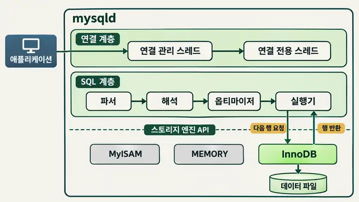
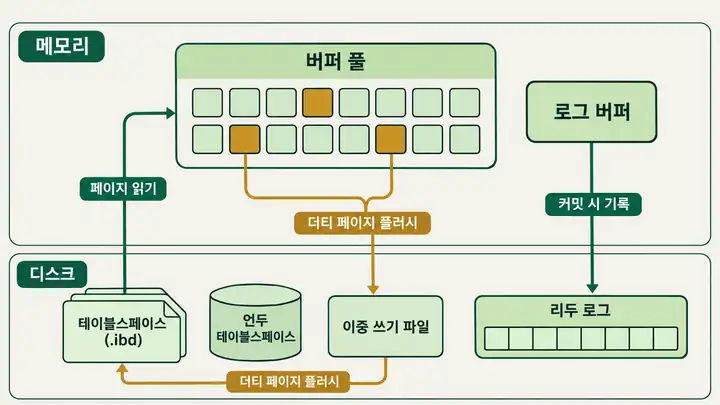
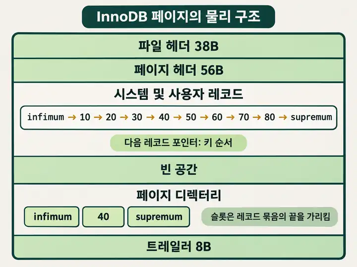
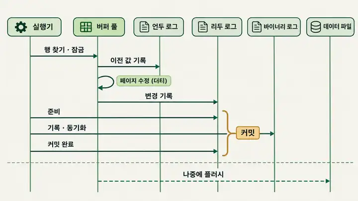

데이터베이스 성능 최적화 / 01회
실습 환경 구성, 데이터베이스 성능과 MySQL 아키텍처
100만 건 실습 데이터를 직접 설계·생성·검증하고, 쿼리 한 문장이 연결 스레드와 SQL 계층을 지나 InnoDB의 버퍼 풀, 16KB 페이지, 리두·언두 로그까지 내려가는 길을 따라가며 성능을 재는 기준을 세운다.
오늘 끝나면 할 수 있는 것
- 분포를 정확히 아는 결정적(deterministic) 실습 데이터를 재귀 CTE로 생성하고, 행 수·분포·물리 크기를 조회해 데이터가 의도대로 만들어졌는지 검증할 수 있다.
- 리틀의 법칙으로 쿼리 시간, 커넥션 풀 크기, 처리량의 관계를 계산해 느린 쿼리 하나가 서비스 전체의 처리량을 어떻게 깎는지 설명할 수 있다.
- MySQL 서버를 연결 계층, SQL 계층(파서·옵티마이저·실행기), 스토리지 엔진 계층으로 나누고, 각 계층이 하는 일과 계층 사이에서 오가는 요청을 상태 변수로 관찰할 수 있다.
- InnoDB의 메모리 구조(버퍼 풀, 로그 버퍼 등)와 디스크 구조(테이블스페이스, 리두 로그, 언두 로그, 이중 쓰기 버퍼)를 그리고, 16KB 페이지 안에 레코드가 놓이는 방식으로 테이블 크기를 어림할 수 있다.
- SELECT와 UPDATE 한 문장이 실행되고 커밋될 때 메모리와 디스크에서 일어나는 일을 순서대로 추적하고, 커밋 직후 장애가 나도 데이터가 남는 이유를 설명할 수 있다.
핵심 강의 → 핵심 요약 → 실무 재판단 → 적용 연습 → 이해 확인
01 핵심 강의
이 강의의 차례 · 소제목 14개
- 이 회차의 질문: 느린 쿼리는 어디에서 시간을 쓰는가
- 성능이 왜 중요한가: 응답 시간, 처리량, 그리고 커넥션
- 실습 데이터 분석: 무엇을 재려고 데이터를 만드는가
- 실습 데이터 생성: 재귀 CTE로 100만 건 만들기
- 실습 데이터 확인 1: 논리적인 내용이 맞는가
- 실습 데이터 확인 2: 물리적으로 얼마나 큰가
- MySQL 서버 구조: 연결 계층, SQL 계층, 스토리지 엔진
- InnoDB 아키텍처 1: 메모리 구조
- InnoDB 아키텍처 2: 디스크 구조와 백그라운드 작업
- 데이터 저장 구조: 테이블스페이스에서 레코드까지
- 쿼리 실행 흐름 1: SELECT 한 문장의 여정
- 쿼리 실행 흐름 2: UPDATE와 커밋
- 관찰해 보기: 상태 변수로 계층 사이의 일을 센다
- 흔한 오해와 정리
이 회차의 질문: 느린 쿼리는 어디에서 시간을 쓰는가
데이터베이스 기본편과 설계편에서는 데이터를 올바르게 저장하고 꺼내는 법을 다뤘다. 이 권의 질문은 다르다. 같은 결과를 돌려주는 두 쿼리 가운데 하나는 1밀리초 만에 끝나고 다른 하나는 몇 초가 걸린다면, 그 차이는 어디에서 생기는가. SQL은 "무엇을 원하는지"만 적는 선언적 언어라서 문장 자체에는 "어떻게 찾을지"가 들어 있지 않다. 어떻게 찾을지는 MySQL 서버가 정하고, 실제로 찾는 일은 스토리지 엔진이 한다. 따라서 성능을 이해하려면 SQL 문장 아래에서 서버와 엔진이 하는 일을 알아야 한다.
이 회차는 그 바닥을 다진다. 먼저 이 권 전체에서 쓸 실습 데이터를 설계하고, 만들고, 검증한다. 이어서 MySQL 서버가 어떤 계층으로 이루어져 있는지, InnoDB가 메모리와 디스크에 어떤 구조를 두는지, 데이터가 16KB 페이지 안에 어떻게 놓이는지, 쿼리 한 문장이 처음부터 끝까지 어떤 길을 지나는지를 차례로 따라간다. 다음 회차부터 다룰 실행 계획(02~03회), B+Tree와 클러스터형 인덱스(05~06회), 옵티마이저(10회)는 모두 이 회차에서 그린 그림 위에 올라간다.
이 권의 기준 환경은 MySQL 8.4 LTS와 InnoDB 스토리지 엔진이다. 8.0과 8.4 사이에 기본값이 바뀐 설정은 바뀐 사실을 함께 적는다. 수치는 MySQL 공식 레퍼런스 매뉴얼과 MySQL 소스 코드에 있는 값만 쓰고, 실습 데이터에 대한 결과는 MySQL 8.4.13 서버에서 실제로 실행한 출력을 싣고, 생성 규칙에서 정확히 계산되는 값은 그 계산도 함께 보인다. 통계 추정치나 페이지 수처럼 실행 환경과 통계에 따라 달라지는 값은 실제로 나온 값을 싣되 그렇다는 점을 밝히고, 실행 시간은 적지 않는다.
성능이 왜 중요한가: 응답 시간, 처리량, 그리고 커넥션
성능을 말할 때 먼저 구분해야 할 두 가지가 있다. 응답 시간(response time, latency)은 요청 하나가 들어와서 결과가 나갈 때까지 걸린 시간이다. 처리량(throughput)은 단위 시간에 끝낸 요청의 수다. 사용자는 응답 시간을 체감하고, 운영자는 처리량을 걱정한다. 둘은 독립적이지 않다. 시스템 안에 동시에 머물 수 있는 요청의 수가 정해져 있으면, 요청 하나가 오래 머물수록 같은 시간에 끝낼 수 있는 요청 수가 줄어든다.
이 관계를 식으로 쓴 것이 리틀의 법칙(Little's law)이다. 안정 상태의 시스템에서 시스템 안에 머무는 평균 요청 수 L은 도착률 λ와 평균 체류 시간 W의 곱과 같다. L = λ × W. 이 식은 분포나 순서에 대한 가정 없이 성립하는 항등식이라서 서버, 큐, 커넥션 풀 어디에나 적용할 수 있다. 데이터베이스 쪽에서 이 식이 가장 날카롭게 작동하는 곳이 커넥션 풀이다. 스프링 DB 1편에서 본 것처럼 애플리케이션은 커넥션 풀에서 커넥션을 빌려 쿼리를 실행하고 돌려준다. 풀의 커넥션 수가 L의 상한이 된다.
계산해 보자. 커넥션 풀 크기가 10이고, 어떤 API가 커넥션 하나를 20밀리초 동안 쓰고 돌려준다고 하자. 리틀의 법칙을 λ = L / W로 바꾸면 이 풀이 감당할 수 있는 최대 처리량은 10 / 0.02초 = 초당 500건이다. 그런데 테이블이 커지면서 그 API의 쿼리가 200밀리초로 느려졌다면, 같은 풀로 감당할 수 있는 처리량은 10 / 0.2초 = 초당 50건으로 떨어진다. 초당 100건이 들어오는 서비스라면 매초 50건씩 커넥션을 기다리는 요청이 쌓이고, 기다림이 커넥션 획득 제한 시간을 넘으면 예외가 난다. 쿼리 하나가 10배 느려졌을 뿐인데 서비스는 장애가 된다.
더 나쁜 일은 이 영향이 그 API에 머물지 않는다는 점이다. 커넥션 풀은 보통 애플리케이션 전체가 공유한다. 느린 쿼리가 커넥션을 붙잡고 있는 동안 빠른 쿼리를 실행해야 하는 다른 API도 커넥션을 얻지 못한다. 애플리케이션 서버의 요청 처리 스레드는 커넥션을 기다리며 묶이고, 스레드 풀이 바닥나면 웹 서버는 새 요청을 받지 못한다. 데이터베이스 서버 쪽에서도 느린 쿼리는 CPU와 디스크 대역폭을 계속 쓰고, 경우에 따라 잠금을 오래 쥐어 다른 트랜잭션을 기다리게 한다.
애플리케이션 서버는 상태가 없게 만들기 쉬워서 서버를 늘리면 처리량이 늘어난다. 데이터베이스는 다르다. 모든 애플리케이션 서버가 같은 데이터를 공유하므로 쓰기를 여러 서버로 나누기 어렵고, 읽기 복제본을 늘리는 것도 복제 지연이라는 대가를 치른다. 그래서 같은 하드웨어에서 쿼리가 하는 일 자체를 줄이는 것, 즉 쿼리 최적화가 가장 싸고 효과가 큰 확장 수단인 경우가 많다. 이 권이 다루는 내용이 그것이다.
그러면 쿼리가 하는 "일"은 무엇으로 재는가. 이 권에서 가장 자주 쓸 기준은 읽은 행 수와 읽은 페이지 수다. 1,000건짜리 테이블에서 풀 스캔을 하는 쿼리는 아무 문제가 없어 보이지만, 같은 쿼리가 100만 건짜리 테이블에서는 1,000배의 행을 읽는다. 풀 스캔의 비용은 데이터 크기에 비례해 늘고, 인덱스를 타는 조회의 비용은 트리 높이만큼만 늘기 때문이다. 개발 환경에서 빠르던 쿼리가 운영에서 느려지는 가장 흔한 이유가 이것이다. 그래서 실습에는 차이가 드러날 만큼 큰 데이터가 필요하다.
실습 데이터 분석: 무엇을 재려고 데이터를 만드는가
실습 데이터는 아무렇게나 만들면 안 된다. 성능 실험의 결과를 해석하려면 데이터가 어떻게 분포하는지 정확히 알아야 하기 때문이다. 예를 들어 "상태가 CANCELED인 주문을 찾는 쿼리"가 몇 행을 읽고 몇 행을 돌려줘야 하는지 미리 알고 있어야, 실행 계획이 내놓는 예상 행 수가 맞는지 틀렸는지 판단할 수 있다. 그래서 이 강좌의 실습 데이터는 난수 대신 행 번호에서 계산되는 결정적인 규칙으로 만든다. 누가 어디서 만들어도 같은 데이터가 나오고, 모든 분포를 손으로 계산할 수 있다.
데이터베이스 이름은 perf_lab이고 테이블은 두 개다. 회원 테이블 member에 10만 건, 주문 테이블 orders에 100만 건을 넣는다. 테이블 이름을 order가 아니라 orders로 정한 것은 ORDER가 예약어이기 때문이다. 두 테이블의 열과 각 열에 담을 값의 규칙은 다음과 같다. 여기서 n은 1부터 시작하는 행 번호다.
| 테이블.열 | 타입 | 생성 규칙 | 결과 분포 |
|---|---|---|---|
| member.member_id | BIGINT, PK | n (1~100,000) | 모두 다름 |
| member.email | VARCHAR(100), UNIQUE | 'user' + n + '@example.com' | 모두 다름 |
| member.grade | VARCHAR(10) | n을 100으로 나눈 나머지로 구간 결정 | BRONZE 60%, SILVER 25%, GOLD 12%, VIP 3% |
| member.region | VARCHAR(20) | n의 백의 자리 숫자로 구간 결정 | 서울 40%, 경기 30%, 부산·대구·광주 각 10% |
| member.joined_at | DATETIME | 2020-01-01부터 n × 900초 뒤 | 가입 순서대로 증가 |
| orders.order_id | BIGINT, PK | n (1~1,000,000) | 모두 다름 |
| orders.member_id | BIGINT | (n × 7919) mod 99991 + 1 | 회원 99,991명에게 10~11건씩 흩어짐 |
| orders.status | VARCHAR(20) | n을 100으로 나눈 나머지로 구간 결정 | DELIVERED 80%, SHIPPED 10%, PAID 7%, CANCELED 3% |
| orders.amount | INT | (n mod 97 + 1) × 1000 | 1,000~97,000원, 97가지가 거의 고르게 |
| orders.ordered_at | DATETIME | 2023-01-01부터 n × 63초 뒤 | 주문 번호 순서대로 증가, 약 2년 |
| orders.memo | VARCHAR(200), NULL 허용 | n이 3의 배수면 NULL, 아니면 '주문 메모 ' + n | 3분의 1이 NULL |
각 규칙에는 이유가 있다. grade, region, status를 일부러 치우치게 만든 것은 선택도(selectivity)가 다른 조건을 비교하기 위해서다. status = 'DELIVERED'는 전체의 80%를 고르고 status = 'CANCELED'는 3%만 고른다. 같은 열, 같은 연산자인데도 어느 값을 찾느냐에 따라 인덱스를 쓰는 것이 이득인지 손해인지가 달라지는데, 이것이 10회에서 다룰 옵티마이저 통계와 히스토그램의 주제다. 고르게 분포한 데이터만으로는 이 차이를 볼 수 없다.
ordered_at을 주문 번호와 같은 순서로 증가하게 만든 것은 실제 서비스에서 AUTO_INCREMENT 기본 키와 생성 시각이 함께 증가하는 모습을 흉내 낸 것이다. 반대로 member_id는 주문 번호와 상관없이 흩어지게 만들었다. 회원 1번의 주문은 주문 번호 99991, 199982, 299973, …, 999910의 10건으로, 주문 테이블 전체에 고르게 퍼져 있다. 그래서 "회원 1번의 주문"을 찾으려면 인덱스가 없을 때 테이블 전체를 읽어야 하고, 인덱스가 있어도 기본 키 순서로는 멀리 떨어진 10개의 행을 하나씩 찾아가야 한다. 이 모습이 06회와 11회에서 다룰 랜덤 액세스 문제의 재료가 된다.
생성 규칙끼리 얽히지 않게 하기: 왜 99,991인가
주문의 member_id 규칙에서 회원 수인 100,000 대신 99,991로 나눈 데는 이유가 있다. 처음 떠올리기 쉬운 규칙은 (n × 7919) mod 100000 + 1이다. 7919는 100,000과 서로소인 소수라서 이 규칙은 회원 10만 명에게 정확히 10건씩 주문을 나눠 준다. 그런데 이 규칙에서는 회원 번호가 n을 100,000으로 나눈 나머지 하나로 정해진다. n mod 100,000을 알면 n mod 100도 정해지므로(100이 100,000의 약수이기 때문이다), 같은 회원의 주문 10건은 모두 같은 n mod 100 값을 갖고, status는 n mod 100으로 정해지므로 모두 같은 상태가 된다. 어떤 회원은 주문이 전부 CANCELED이고 어떤 회원은 전부 DELIVERED인, 의도하지 않은 상관관계가 생긴다.
99,991은 소수이므로 100과 서로소다. 중국인의 나머지 정리에 따라 n mod 99,991과 n mod 100은 서로 독립적으로 움직이고, 한 회원의 주문들은 여러 상태에 고르게 흩어진다. 실제로 회원 1번의 주문 10건에서 n mod 100은 91, 82, 73, 64, 55, 46, 37, 28, 19, 10이 되어 상태는 PAID 1건, SHIPPED 1건, DELIVERED 8건이다. 대가로 회원 번호는 1부터 99,991까지만 쓰이고, 99,992번부터 100,000번까지 9명은 주문이 없다. 100만을 99,991로 나누면 몫이 10이고 나머지가 90이므로, 90명은 주문이 11건이고 나머지 99,901명은 10건이다.
이 이야기는 데이터 생성 요령에서 끝나지 않는다. 실제 데이터에서도 열끼리 상관관계가 있으면(예를 들어 "지역이 서울"과 "배송사가 A"가 함께 나타나는 경우) 옵티마이저가 두 조건을 서로 독립이라고 가정하고 계산한 예상 행 수가 크게 빗나간다. 실습 데이터에서 의도하지 않은 상관관계를 없애 둔 것은, 나중에 예상 행 수가 빗나가는 현상을 볼 때 그 원인이 데이터 생성의 우연이 아니라 옵티마이저의 가정이라는 것을 분명히 하기 위해서다.
실습 데이터 생성: 재귀 CTE로 100만 건 만들기
먼저 데이터베이스와 테이블을 만든다. 두 테이블 모두 기본 키 외에는 인덱스를 거의 두지 않는다. orders.member_id에 인덱스도 외래 키도 두지 않은 것은 의도적이다. MySQL은 외래 키를 선언하면 참조하는 열에 인덱스가 없을 때 인덱스를 자동으로 만들기 때문에, 외래 키를 걸면 "인덱스가 없는 상태"를 실험할 수 없다. 인덱스는 이후 회차에서 실험의 목적에 맞게 하나씩 추가한다.
CREATE DATABASE perf_lab DEFAULT CHARACTER SET utf8mb4;
USE perf_lab;
CREATE TABLE member (
member_id BIGINT NOT NULL AUTO_INCREMENT,
email VARCHAR(100) NOT NULL,
name VARCHAR(50) NOT NULL,
grade VARCHAR(10) NOT NULL,
region VARCHAR(20) NOT NULL,
joined_at DATETIME NOT NULL,
PRIMARY KEY (member_id),
UNIQUE KEY uk_member_email (email)
) ENGINE = InnoDB;
CREATE TABLE orders (
order_id BIGINT NOT NULL AUTO_INCREMENT,
member_id BIGINT NOT NULL,
status VARCHAR(20) NOT NULL,
amount INT NOT NULL,
ordered_at DATETIME NOT NULL,
memo VARCHAR(200) NULL,
PRIMARY KEY (order_id)
) ENGINE = InnoDB;행을 대량으로 만드는 방법은 여러 가지다. 이 강좌는 MySQL 8.0부터 지원하는 재귀 공통 테이블 식(recursive common table expression, 재귀 CTE)을 쓴다. 재귀 CTE는 두 개의 SELECT를 UNION ALL로 잇는다. 첫 번째 SELECT는 CTE 자신을 참조하지 않고 시작 행을 만든다. 두 번째 SELECT는 FROM 절에서 CTE 자신을 참조해 직전 반복에서 만들어진 행으로부터 새 행을 만들고, 새 행이 하나도 나오지 않으면 재귀가 끝난다. 아래의 seq는 1에서 시작해 1씩 늘어나는 수를 만든다.
SET SESSION cte_max_recursion_depth = 1000000;
INSERT INTO member (member_id, email, name, grade, region, joined_at)
WITH RECURSIVE seq (n) AS (
SELECT 1
UNION ALL
SELECT n + 1 FROM seq WHERE n < 100000
)
SELECT n,
CONCAT('user', n, '@example.com'),
CONCAT('회원', LPAD(n, 6, '0')),
CASE WHEN MOD(n, 100) < 60 THEN 'BRONZE'
WHEN MOD(n, 100) < 85 THEN 'SILVER'
WHEN MOD(n, 100) < 97 THEN 'GOLD'
ELSE 'VIP' END,
CASE WHEN MOD(n DIV 100, 10) < 4 THEN '서울'
WHEN MOD(n DIV 100, 10) < 7 THEN '경기'
WHEN MOD(n DIV 100, 10) = 7 THEN '부산'
WHEN MOD(n DIV 100, 10) = 8 THEN '대구'
ELSE '광주' END,
TIMESTAMP('2020-01-01') + INTERVAL n * 900 SECOND
FROM seq;
INSERT INTO orders (order_id, member_id, status, amount, ordered_at, memo)
WITH RECURSIVE seq (n) AS (
SELECT 1
UNION ALL
SELECT n + 1 FROM seq WHERE n < 1000000
)
SELECT n,
MOD(n * 7919, 99991) + 1,
CASE WHEN MOD(n, 100) < 80 THEN 'DELIVERED'
WHEN MOD(n, 100) < 90 THEN 'SHIPPED'
WHEN MOD(n, 100) < 97 THEN 'PAID'
ELSE 'CANCELED' END,
(MOD(n, 97) + 1) * 1000,
TIMESTAMP('2023-01-01') + INTERVAL n * 63 SECOND,
CASE WHEN MOD(n, 3) = 0 THEN NULL ELSE CONCAT('주문 메모 ', n) END
FROM seq;
ANALYZE TABLE member, orders;이 스크립트에서 짚어 볼 곳이 네 군데 있다. 첫째, cte_max_recursion_depth다. MySQL은 재귀 CTE가 이 변수의 값보다 깊이 재귀하면 실행을 중단하는데, 기본값은 1000이다. 기본값 그대로 두면 1,000단계를 넘는 순간 문장이 실패하므로 세션 값을 100만으로 올렸다. 이 제한은 종료 조건을 빠뜨린 재귀 CTE가 끝없이 도는 것을 막는 안전장치다. 세션 변수 대신 SET_VAR 옵티마이저 힌트로 문장 하나에만 적용할 수도 있다.
둘째, 재귀 CTE의 열 타입이다. MySQL 매뉴얼은 재귀 CTE 결과 열의 타입이 재귀하지 않는 첫 번째 SELECT만 보고 정해진다고 명시한다. 여기서는 SELECT 1의 정수 타입이 n의 타입이 되는데, 100만은 정수 타입의 범위에 넉넉히 들어가므로 문제가 없다. 하지만 첫 SELECT에서 'abc'로 시작한 문자열 열을 재귀하면서 늘리면, 열 너비가 첫 SELECT 기준으로 고정되어 엄격 모드에서는 "Data too long" 오류가 나고 엄격하지 않은 모드에서는 값이 잘린다. 이때는 첫 SELECT에서 CAST('abc' AS CHAR(20))처럼 너비를 넓혀 둔다.
셋째, 산술의 범위다. n * 7919는 n이 100만일 때 79억이 넘어 32비트 정수 범위를 벗어난다. MySQL은 두 정수의 덧셈, 뺄셈, 곱셈을 64비트 BIGINT 정밀도로 계산하므로 이 곱은 넘치지 않는다. 날짜는 TIMESTAMP('2023-01-01')로 만든 DATETIME 값에 INTERVAL n * 63 SECOND를 더해 만든다.
넷째, 트랜잭션의 크기다. 자동 커밋(autocommit)이 켜진 기본 상태에서 INSERT ... SELECT 한 문장은 트랜잭션 하나다. 100만 건을 한 문장으로 넣으면 그만큼의 언두 로그와 리두 로그가 한 트랜잭션에서 만들어지고, 중간에 실패하면 100만 건 전체가 롤백된다. 실습용 빈 서버에서는 문제가 되지 않지만, 운영 중인 서버에서 대량 데이터를 넣을 때는 기본 키 구간을 나눠 여러 트랜잭션으로 넣는 것이 일반적이다. 그 이유는 이 회차 뒷부분에서 언두 로그와 리두 로그의 역할을 보면 분명해진다.
실습 데이터 확인 1: 논리적인 내용이 맞는가
데이터를 넣었으면 먼저 내용이 규칙대로인지 확인한다. 생성 규칙이 결정적이므로 아래 쿼리들의 결과는 누가 돌려도 똑같아야 하고, 하나라도 다르면 생성 스크립트를 잘못 실행한 것이다. 확인은 "전체 건수 → 각 열의 분포 → 범위의 양 끝 → 테이블 사이의 관계" 순서로 한다. GROUP BY 결과의 순서는 SQL이 보장하지 않으므로 항상 ORDER BY를 붙인다.
SELECT COUNT(*) FROM member; -- 100000
SELECT COUNT(*) FROM orders; -- 1000000
SELECT grade, COUNT(*) FROM member GROUP BY grade ORDER BY COUNT(*) DESC;
SELECT region, COUNT(*) FROM member GROUP BY region ORDER BY region;
SELECT status, COUNT(*) FROM orders GROUP BY status ORDER BY COUNT(*) DESC;+--------+----------+
| grade | COUNT(*) |
+--------+----------+
| BRONZE | 60000 |
| SILVER | 25000 |
| GOLD | 12000 |
| VIP | 3000 |
+--------+----------+
+--------+----------+
| region | COUNT(*) |
+--------+----------+
| 경기 | 30000 |
| 광주 | 10000 |
| 대구 | 10000 |
| 부산 | 10000 |
| 서울 | 40000 |
+--------+----------+
+-----------+----------+
| status | COUNT(*) |
+-----------+----------+
| DELIVERED | 800000 |
| SHIPPED | 100000 |
| PAID | 70000 |
| CANCELED | 30000 |
+-----------+----------+왜 이 숫자가 나오는지 따져 보자. n이 1부터 100,000까지일 때 n mod 100은 0부터 99까지의 각 값을 정확히 1,000번씩 가진다. 100,000이 100의 배수이기 때문이다. 그래서 나머지가 0~59인 BRONZE는 60 × 1,000 = 60,000명이다. 지역은 백의 자리 숫자 MOD(n DIV 100, 10)로 정했다. 0부터 99,999까지의 수에서 백의 자리 숫자는 0~9가 각각 10,000번씩 나오고, 실제 범위 1~100,000은 여기서 0을 빼고 100,000을 더한 것인데 둘 다 백의 자리가 0이므로 분포가 그대로다. 등급(끝 두 자리)과 지역(백의 자리)은 서로 다른 자릿수에서 정해지므로 서로 독립이다. 주문 상태도 같은 논리로 n mod 100의 각 값이 10,000번씩 나와 정확히 80만, 10만, 7만, 3만 건이 된다.
다음은 범위의 양 끝과 테이블 사이의 관계다.
SELECT MIN(joined_at), MAX(joined_at) FROM member;
SELECT MIN(ordered_at), MAX(ordered_at) FROM orders;
SELECT YEAR(ordered_at) AS y, COUNT(*) FROM orders GROUP BY y ORDER BY y;
SELECT COUNT(DISTINCT member_id), MIN(member_id), MAX(member_id) FROM orders;
SELECT cnt, COUNT(*) AS members
FROM (SELECT member_id, COUNT(*) AS cnt FROM orders GROUP BY member_id) t
GROUP BY cnt ORDER BY cnt;
SELECT COUNT(memo), SUM(memo IS NULL), SUM(amount) FROM orders;+---------------------+---------------------+
| MIN(joined_at) | MAX(joined_at) |
+---------------------+---------------------+
| 2020-01-01 00:15:00 | 2022-11-07 16:00:00 |
+---------------------+---------------------+
+---------------------+---------------------+
| MIN(ordered_at) | MAX(ordered_at) |
+---------------------+---------------------+
| 2023-01-01 00:01:03 | 2024-12-30 04:00:00 |
+---------------------+---------------------+
+------+----------+
| y | COUNT(*) |
+------+----------+
| 2023 | 500571 |
| 2024 | 499429 |
+------+----------+
+---------------------------+----------------+----------------+
| COUNT(DISTINCT member_id) | MIN(member_id) | MAX(member_id) |
+---------------------------+----------------+----------------+
| 99991 | 1 | 99991 |
+---------------------------+----------------+----------------+
+-----+---------+
| cnt | members |
+-----+---------+
| 10 | 99901 |
| 11 | 90 |
+-----+---------+
+-------------+-------------------+-------------+
| COUNT(memo) | SUM(memo IS NULL) | SUM(amount) |
+-------------+-------------------+-------------+
| 666667 | 333333 | 48999082000 |
+-------------+-------------------+-------------+가입 시각의 끝값은 100,000 × 900초 = 9,000만 초, 즉 1,041일 16시간을 2020-01-01에 더한 값이다. 주문 시각의 끝값은 100만 × 63초 = 6,300만 초, 즉 729일 4시간이다. 2023년이 365일이므로 2023년 안에 들어가는 주문은 n × 63이 31,536,000초보다 작은 n, 곧 n ≤ 500,571인 주문이다. 모든 회원의 가입 시각이 첫 주문 시각보다 앞선다는 점도 확인할 수 있다. 회원 9명(99,992~100,000번)은 주문이 없으므로 주문 테이블에 나타나는 회원 수는 99,991이고, 회원당 주문 수는 앞에서 계산한 대로 10건이 99,901명, 11건이 90명이다.
COUNT(memo)는 NULL이 아닌 값만 센다는 점을 기억하자. n이 3의 배수인 333,333건은 memo가 NULL이고, 나머지 666,667건만 COUNT(memo)에 잡힌다. SUM(memo IS NULL)은 MySQL에서 비교식이 참이면 1, 거짓이면 0이 된다는 점을 이용한 관용구다. 마지막으로 회원 한 명의 주문을 직접 보자.
SELECT order_id, status, amount FROM orders WHERE member_id = 1 ORDER BY order_id;+----------+-----------+--------+
| order_id | status | amount |
+----------+-----------+--------+
| 99991 | PAID | 82000 |
| 199982 | SHIPPED | 66000 |
| 299973 | DELIVERED | 50000 |
| 399964 | DELIVERED | 34000 |
| 499955 | DELIVERED | 18000 |
| 599946 | DELIVERED | 2000 |
| 699937 | DELIVERED | 83000 |
| 799928 | DELIVERED | 67000 |
| 899919 | DELIVERED | 51000 |
| 999910 | DELIVERED | 35000 |
+----------+-----------+--------+결과는 10행뿐이지만 이 쿼리는 orders의 100만 행을 모두 읽는다. member_id에 인덱스가 없으므로 어느 행이 회원 1번의 것인지 알 방법이 하나하나 읽어 보는 것밖에 없기 때문이다. 10행을 얻으려고 100만 행을 읽는 이 비율이 이 권에서 줄여 나갈 대상이다. 이 쿼리를 이 회차 뒤의 "관찰해 보기"에서 다시 쓴다.
실습 데이터 확인 2: 물리적으로 얼마나 큰가
논리적인 내용이 맞으면 이번에는 데이터가 디스크와 메모리에서 얼마나 큰지 본다. 성능은 결국 몇 페이지를 읽느냐의 문제이므로, 테이블이 몇 페이지로 이루어져 있는지 아는 것이 출발점이다. MySQL은 테이블 크기를 여러 곳에서 보여 주는데, 각 숫자가 무엇을 뜻하는지 정확히 알아야 잘못 읽지 않는다.
SELECT table_name, table_rows, avg_row_length, data_length, index_length
FROM information_schema.TABLES
WHERE table_schema = 'perf_lab';
SELECT table_name, index_name, stat_name, stat_value
FROM mysql.innodb_index_stats
WHERE database_name = 'perf_lab' AND stat_name IN ('size', 'n_leaf_pages');
SELECT name, file_size, allocated_size
FROM information_schema.INNODB_TABLESPACES
WHERE name LIKE 'perf_lab/%';+------------+------------+----------------+-------------+--------------+
| TABLE_NAME | TABLE_ROWS | AVG_ROW_LENGTH | DATA_LENGTH | INDEX_LENGTH |
+------------+------------+----------------+-------------+--------------+
| member | 99663 | 89 | 8929280 | 6832128 |
| orders | 995694 | 74 | 74039296 | 0 |
+------------+------------+----------------+-------------+--------------+
+------------+-----------------+--------------+------------+
| table_name | index_name | stat_name | stat_value |
+------------+-----------------+--------------+------------+
| member | PRIMARY | n_leaf_pages | 529 |
| member | PRIMARY | size | 545 |
| member | uk_member_email | n_leaf_pages | 349 |
| member | uk_member_email | size | 417 |
| orders | PRIMARY | n_leaf_pages | 4467 |
| orders | PRIMARY | size | 4519 |
+------------+-----------------+--------------+------------+
+-----------------+-----------+----------------+
| name | file_size | allocated_size |
+-----------------+-----------+----------------+
| perf_lab/member | 24117248 | 24121344 |
| perf_lab/orders | 83886080 | 83890176 |
+-----------------+-----------+----------------+이 표의 TABLE_ROWS, 페이지 수, 파일 크기는 실행 환경과 통계에 따라 달라진다. 특히 TABLE_ROWS는 실제 행 수(10만, 100만)와 다르게 99,663과 995,694로 나왔는데, 그 이유를 바로 아래에서 설명한다.
information_schema.TABLES의 열은 InnoDB에서 다음 뜻을 가진다. DATA_LENGTH는 클러스터형 인덱스에 할당된 공간으로, 매뉴얼의 정의로는 클러스터형 인덱스의 페이지 수에 페이지 크기를 곱한 값이다. InnoDB에서는 테이블의 행 자체가 클러스터형 인덱스에 들어 있으므로 이것이 사실상 테이블 데이터의 크기다. INDEX_LENGTH는 클러스터형이 아닌 인덱스, 즉 세컨더리 인덱스들의 페이지 수 합에 페이지 크기를 곱한 값이다. member에서는 uk_member_email이 여기에 잡히고, 세컨더리 인덱스가 없는 orders에서는 0이 나온다.
TABLE_ROWS는 조심해서 읽어야 한다. 매뉴얼은 InnoDB에서 이 값이 SQL 최적화에 쓰는 대략적인 추정치이며 실제 값과 40~50%까지 차이 날 수 있다고 적고 있다. InnoDB는 행 수를 따로 세어 두지 않고 일부 페이지를 표본으로 읽어 추정하기 때문이다. 정확한 행 수가 필요하면 COUNT(*)를 써야 한다. 또 이 열들은 캐시된 값이다. information_schema_stats_expiry 변수가 캐시의 유효 기간을 정하는데 기본값이 86,400초(24시간)이므로, 데이터를 대량으로 넣은 직후 조회하면 넣기 전의 값이 보일 수 있다. 생성 스크립트 끝에서 ANALYZE TABLE을 실행한 이유가 이것이다. ANALYZE TABLE은 해당 테이블의 캐시 값을 갱신한다.
mysql.innodb_index_stats는 InnoDB가 옵티마이저를 위해 저장해 두는 인덱스 통계다. stat_name이 size인 행은 인덱스의 전체 페이지 수, n_leaf_pages인 행은 그중 리프 페이지 수를 보여 준다. orders의 PRIMARY 인덱스에서 두 값을 비교하면 페이지 대부분이 행을 담은 리프 페이지이고 트리의 위층 페이지는 몇 개뿐이라는 것을 볼 수 있다. 위 결과에서 size 4,519와 n_leaf_pages 4,467의 차이 52가 모두 위층 페이지인 것은 아니다. size는 인덱스의 세그먼트에 할당된 페이지를 세므로 아직 쓰지 않은 페이지도 들어간다. DATA_LENGTH 74,039,296도 4,519 × 16,384로, 이 size에 페이지 크기를 곱한 값과 같다. INNODB_TABLESPACES의 FILE_SIZE는 테이블스페이스 파일(.ibd)의 겉보기 크기이고 ALLOCATED_SIZE는 파일 시스템이 실제로 할당한 크기다.
테이블 크기를 손으로 어림하기
위 쿼리가 보여 줄 숫자를 미리 어림해 보자. 숫자를 맞히는 것이 목적이 아니라, 테이블 크기가 무엇으로 정해지는지 이해하는 것이 목적이다. InnoDB의 기본 행 형식인 DYNAMIC에서 클러스터형 인덱스의 레코드 하나는 다음으로 이루어진다. 각 항목의 크기는 MySQL 매뉴얼의 행 형식과 저장 공간 요구량 문서에 있는 값이다.
| 구성 요소 | 크기(바이트) | 근거 |
|---|---|---|
| 레코드 헤더 | 5 | 모든 인덱스 레코드에 붙는 5바이트 헤더(다음 레코드 연결, 행 잠금 정보) |
| NULL 비트맵 | 1 | NULL 허용 열 수 N에 대해 CEILING(N/8)바이트, 여기서는 memo 하나 |
| 가변 길이 열의 길이 정보 | 평균 약 1.7 | status 1바이트, memo는 NULL이 아닐 때만 1바이트 |
| order_id | 8 | BIGINT |
| DB_TRX_ID | 6 | 마지막으로 행을 바꾼 트랜잭션 ID(숨은 열) |
| DB_ROLL_PTR | 7 | 언두 로그 레코드를 가리키는 포인터(숨은 열) |
| member_id, amount, ordered_at | 8 + 4 + 5 | BIGINT, INT, 소수 초 없는 DATETIME |
| status 값 | 평균 약 8.4 | 'DELIVERED' 9바이트가 80%, 나머지는 4~8바이트 |
| memo 값 | 평균 약 13.3 | NULL이 아닌 3분의 2의 행이 평균 약 19.9바이트 |
| 합계 | 약 67 |
가변 길이 열의 길이 정보가 1바이트인 이유는 이렇다. 매뉴얼에 따르면 길이 정보는 보통 1바이트이고, 열의 최대 길이가 255바이트를 넘으면서 실제 길이가 127바이트를 넘을 때(또는 일부가 페이지 밖에 저장될 때)만 2바이트가 된다. memo는 utf8mb4에서 한 글자가 최대 4바이트이므로 최대 800바이트지만 실제 값이 127바이트보다 짧아 1바이트로 충분하다. 한글 '주문 메모 '는 한 글자에 3바이트라서 14바이트이고, 여기에 숫자가 붙어 평균 약 19.9바이트가 된다.
이제 페이지 하나에 몇 레코드가 들어가는지 계산한다. 페이지 16,384바이트 가운데 파일 헤더 38바이트, 인덱스 페이지 헤더 56바이트, 시스템 레코드(infimum과 supremum) 26바이트, 파일 트레일러 8바이트는 레코드에 쓸 수 없다. 이 숫자들은 뒤의 "데이터 저장 구조"에서 MySQL 소스 코드로 확인한다. 기본 키 순서로 넣었으므로 페이지는 약 15/16까지 찬다. 16,384 × 15/16 = 15,360바이트에서 고정 부분 128바이트를 빼면 약 15,230바이트이고, 레코드 하나가 페이지 디렉터리 몫을 포함해 약 67.5바이트라면 페이지 하나에 약 225개가 들어간다. 그러면 100만 건에는 리프 페이지가 약 4,400개, 크기로는 약 70MB가 필요하다.
이 어림은 실제 값과 다를 수 있다. 페이지가 정확히 15/16에서 멈추지 않고, DATA_LENGTH에는 세그먼트에 할당되었지만 아직 쓰지 않은 페이지도 들어갈 수 있기 때문이다. 앞의 실행 결과에서 n_leaf_pages는 4,467로, 리프 페이지 하나에 평균 약 224행이 들어 있어 어림한 225개와 거의 같다. DATA_LENGTH는 74,039,296바이트(약 70.6MB)로 할당된 미사용 페이지까지 포함한 값이다. 직접 확인한 n_leaf_pages와 이 어림을 비교해 보고, 차이가 있다면 그 이유를 생각해 보는 것이 이 절의 연습이다. 중요한 것은 결론의 방향이다. 행 하나의 크기가 페이지당 행 수를 정하고, 페이지당 행 수가 같은 행 수를 읽을 때 필요한 페이지 수를 정한다. 열 하나를 BIGINT에서 INT로 줄이거나 쓰지 않는 긴 열을 빼면 페이지 수가 줄고, 같은 버퍼 풀에 더 많은 행이 들어간다.
이 데이터는 버퍼 풀에 다 들어간다
마지막으로 확인할 것은 데이터 크기와 버퍼 풀 크기의 관계다. innodb_buffer_pool_size의 기본값은 134,217,728바이트, 즉 128MB다. 앞에서 확인한 대로 orders는 약 70.6MB이고 member는 데이터와 인덱스를 합쳐 약 15MB(8,929,280 + 6,832,128바이트)이므로, 기본 설정의 실습 서버에서는 몇 번 쿼리를 돌리고 나면 두 테이블이 거의 통째로 버퍼 풀에 올라간다. 아래 상태 변수로 버퍼 풀 페이지가 얼마나 차 있는지 볼 수 있다.
SELECT @@innodb_buffer_pool_size / 1024 / 1024 AS buffer_pool_mb,
@@innodb_page_size AS page_size;
SHOW GLOBAL STATUS LIKE 'Innodb_buffer_pool_pages%';이 사실은 실습 결과를 해석할 때 중요하다. 데이터가 모두 메모리에 있으면 풀 스캔도 디스크를 거의 건드리지 않으므로, 실행 시간만 보면 풀 스캔과 인덱스 조회의 차이가 운영 환경보다 훨씬 작게 보인다. 운영 데이터가 버퍼 풀보다 몇 배 크다면 같은 풀 스캔이 디스크 읽기를 대량으로 일으키고, 다른 쿼리가 쓰던 페이지까지 버퍼 풀에서 밀어낸다. 그래서 이 권에서는 실행 시간보다 읽은 행 수와 읽은 페이지 수를 더 중요한 지표로 본다. 이 두 숫자는 데이터가 메모리에 있든 디스크에 있든 쿼리가 하는 일의 양을 그대로 보여 준다.
MySQL 서버 구조: 연결 계층, SQL 계층, 스토리지 엔진
이제 데이터가 놓인 서버 안으로 들어가 보자. MySQL 서버 프로그램 mysqld는 하나의 프로세스 안에서 여러 스레드가 일하는 멀티스레드 프로그램이다. 클라이언트(mysql 명령줄 도구, 자바의 MySQL Connector/J 드라이버 등)는 TCP(기본 포트 3306)나 유닉스 소켓 파일로 이 프로세스에 접속한다. 서버 안은 크게 세 층으로 나눠 보면 이해하기 쉽다. 접속을 받아 스레드에 붙이는 연결 계층, SQL을 해석하고 실행 방법을 정하는 SQL 계층(서버 계층이라고도 부른다), 데이터를 실제로 저장하고 읽는 스토리지 엔진 계층이다.
애플리케이션 (HikariCP 커넥션 10개) mysql 명령줄 도구
│ TCP 3306 │ 유닉스 소켓
┌─────────▼───────────────────── mysqld (프로세스 하나) ──────▼──────────┐
│ [연결 계층] 연결 관리 스레드 ─▶ 연결마다 전용 스레드 (인증 · 요청 처리) │
│ 스레드 캐시: 끊긴 연결의 스레드를 다음 연결에 재사용 │
├────────────────────────────────────────────────────────────────────────┤
│ [SQL 계층] 파서 ─▶ 해석(이름·권한 확인) ─▶ 옵티마이저 ─▶ 실행기 │
│ 데이터 사전 · 바이너리 로그 · 슬로 쿼리 로그 · 세션별 버퍼 │
├──────────────────── 스토리지 엔진 API (핸들러) ──────────────────────────┤
│ [스토리지 엔진] InnoDB (기본) │ MyISAM │ MEMORY │ CSV │ ... │
└────────────────────────────────────────────────────────────────────────┘
│
파일 시스템: *.ibd · ibdata1 · undo_001 · #innodb_redo/ · binlog.*
연결 계층: 연결 하나에 스레드 하나
MySQL 매뉴얼에 따르면 연결 관리 스레드(connection manager thread)가 네트워크 인터페이스에서 들어오는 연결 요청을 받는다. 모든 플랫폼에서 TCP/IP 연결 요청은 관리 스레드 하나가 처리하고, 유닉스에서는 같은 스레드가 유닉스 소켓 연결도 처리한다. 관리 스레드는 각 클라이언트 연결을 그 연결 전용 스레드에 연결하고, 이 전용 스레드가 인증과 그 뒤의 모든 요청 처리를 맡는다. 즉 기본 연결 모델에서는 현재 연결된 클라이언트 수만큼 스레드가 있다. 매뉴얼도 이 모델이 아주 많은 연결을 처리해야 할 때 불리하다고 적고 있으며, MySQL Enterprise Edition에는 다른 스레드 모델을 제공하는 스레드 풀 플러그인이 있다.
스레드를 만들고 없애는 비용을 줄이려고 서버는 스레드 캐시를 둔다. 연결이 끝나면 그 스레드는 캐시가 가득 차지 않은 한 캐시로 돌아가고, 새 연결이 오면 관리 스레드는 먼저 캐시에서 쓸 수 있는 스레드를 찾는다. 캐시 크기는 thread_cache_size가 정하며 기본적으로 서버가 시작할 때 자동으로 정한다. Threads_created 상태 변수가 계속 늘어난다면 캐시에서 스레드를 얻지 못해 새로 만드는 일이 잦다는 뜻이다. 연결 수의 상한은 max_connections이고, 서버는 실제로 그보다 하나 더 많은 연결을 허용해 CONNECTION_ADMIN 권한을 가진 관리자가 접속할 자리를 남겨 둔다.
이 구조를 스프링 애플리케이션 쪽에서 보면, HikariCP가 커넥션 10개를 열어 두면 MySQL 서버에는 그 커넥션 전용 스레드 10개가 대기하고 있다는 뜻이다. 애플리케이션 서버를 20대로 늘리면 서버 스레드는 200개가 된다. 커넥션 풀 크기는 애플리케이션 쪽 설정이지만 그 합계는 데이터베이스 서버의 스레드 수와 max_connections에 직접 부딪힌다. SHOW PROCESSLIST로 연결마다 하나씩 있는 스레드와 각 스레드가 지금 실행 중인 문장을 볼 수 있고, performance_schema.threads 테이블에서는 TYPE 열이 FOREGROUND인 연결 스레드와 BACKGROUND인 서버 내부 스레드(InnoDB의 백그라운드 작업 스레드 등)를 함께 볼 수 있다.
SQL 계층: 문장을 해석하고 실행 방법을 정한다
연결 스레드가 SQL 문자열을 받으면 SQL 계층의 처리가 시작된다. 먼저 파서(parser)가 문자열을 문법에 맞게 쪼개 구문 트리를 만든다. 키워드 철자가 틀리거나 괄호가 맞지 않으면 여기서 "You have an error in your SQL syntax" 오류(ERROR 1064)가 난다. 다음으로 구문 트리에 나온 테이블과 열 이름이 실제로 있는지, 사용자가 그 객체에 접근할 권한이 있는지를 데이터 사전과 권한 정보로 확인한다. 존재하지 않는 열을 쓰면 "Unknown column" 오류(ERROR 1054)가 이 단계에서 난다. 문법은 맞지만 의미가 틀린 문장이 걸러지는 곳이다.
그다음이 이 권의 주인공인 옵티마이저(optimizer)다. 옵티마이저는 같은 결과를 내는 여러 실행 방법 가운데 비용이 가장 낮다고 추정되는 것을 고른다. 어느 인덱스를 쓸지, 인덱스 없이 테이블 전체를 읽을지, 여러 테이블을 어떤 순서와 어떤 알고리즘으로 조인할지, 정렬을 따로 해야 하는지가 여기서 정해진다. 비용을 추정하려면 테이블에 행이 몇 개 있는지, 조건이 몇 행을 고를지 알아야 하는데, 이 통계는 스토리지 엔진이 제공한다. 앞에서 본 mysql.innodb_index_stats가 그 통계의 저장소다. 옵티마이저가 고른 결과가 실행 계획(execution plan)이고, 02회와 03회에서 다룰 EXPLAIN과 EXPLAIN ANALYZE가 이것을 보여 준다.
마지막으로 실행기(executor)가 실행 계획대로 일을 한다. 실행기는 데이터를 직접 읽지 않는다. 스토리지 엔진에게 "이 인덱스에서 이 키 값을 가진 첫 행을 달라", "다음 행을 달라" 같은 요청을 보내고, 받은 행에 WHERE 조건을 적용하고, 조인하고, 정렬하고, 집계해서 결과를 만든다. 이 요청이 오가는 경계가 스토리지 엔진 API이고, 엔진 쪽에서 이 API를 구현한 객체를 핸들러(handler)라고 부른다. 뒤에서 관찰할 Handler_read_key, Handler_read_next, Handler_read_rnd_next 같은 상태 변수가 바로 이 경계를 넘은 요청의 횟수를 센다.
SQL 계층에는 엔진과 무관한 서버 공통 기능도 있다. 복제와 시점 복구에 쓰는 바이너리 로그(binary log)는 엔진이 아니라 서버가 기록하며 MySQL 8.4에서 기본으로 켜져 있다. 느린 문장을 기록하는 슬로 쿼리 로그도 서버 기능이다. 테이블 정의 같은 메타데이터는 MySQL 8.0부터 트랜잭션을 지원하는 데이터 사전(data dictionary)에 저장되며, 이전 버전이 쓰던 .frm 같은 메타데이터 파일은 없어졌다. 반대로 사라진 것도 있다. 같은 SELECT 문자열의 결과를 통째로 저장해 두던 쿼리 캐시(query cache)는 MySQL 8.0에서 제거되었고, query_cache_size 같은 변수와 SQL_CACHE 수식어도 함께 없어졌다. 오래된 튜닝 글에서 쿼리 캐시 설정을 권하더라도 8.0 이후에는 해당되지 않는다.
스토리지 엔진 계층: 데이터를 실제로 다루는 곳
MySQL 매뉴얼은 스토리지 엔진을 서버 안에서 물리적인 데이터에 대해 실제로 동작을 수행하는 구성 요소라고 설명한다. MySQL의 엔진은 교체할 수 있는(pluggable) 구조라서 테이블마다 ENGINE 절로 엔진을 고를 수 있고, MySQL 8.4에서는 엔진을 지정하지 않으면 InnoDB 테이블이 만들어진다. SHOW ENGINES로 서버가 지원하는 엔진 목록을 볼 수 있는데, Support 열이 DEFAULT인 엔진이 기본 엔진이다. MyISAM, MEMORY, CSV 같은 다른 엔진도 있지만, 트랜잭션, 행 단위 잠금, 충돌 복구, 외래 키가 필요한 일반적인 업무 테이블은 InnoDB를 쓴다.
계층이 나뉘어 있다는 사실은 성능에 직접 영향을 준다. 인덱스는 엔진이 구현하는 것이라 엔진마다 인덱스 구조가 다르다. WHERE 조건은 기본적으로 SQL 계층의 실행기가 평가하므로, 엔진은 조건에 맞지 않는 행도 실행기에게 넘긴 뒤에야 버려진다. 슬로 쿼리 로그의 Rows_examined가 "스토리지 엔진 내부 처리를 제외하고 서버 계층이 검사한 행 수"로 정의되는 이유가 이것이다. 엔진이 넘긴 행이 많을수록 계층 사이를 오가는 비용이 쌓인다. 08회에서 다룰 인덱스 컨디션 푸시다운(ICP)은 조건 일부를 엔진 쪽으로 내려보내 이 왕복을 줄이는 최적화다.

InnoDB 아키텍처 1: 메모리 구조
MySQL 매뉴얼은 InnoDB의 구조를 메모리 구조와 디스크 구조로 나눠 설명한다. 메모리 구조는 버퍼 풀, 변경 버퍼, 적응형 해시 인덱스, 로그 버퍼의 넷이고, 디스크 구조는 테이블, 인덱스, 테이블스페이스, 이중 쓰기 버퍼, 리두 로그, 언두 로그다. 하나씩 보되, 성능과 가장 직접 관련된 버퍼 풀부터 시작한다.
버퍼 풀: 디스크 페이지의 캐시
버퍼 풀(buffer pool)은 InnoDB가 테이블과 인덱스 데이터를 캐시하는 메인 메모리 영역이다. 디스크의 데이터는 페이지 단위(기본 16KB)로 읽혀 버퍼 풀의 같은 크기 칸에 올라오고, InnoDB는 행 하나를 읽을 때도 그 행이 들어 있는 페이지 전체를 버퍼 풀로 가져온다. 쿼리가 행을 읽거나 바꾸는 일은 버퍼 풀 안의 페이지에서 일어난다. 그래서 "쿼리가 몇 페이지를 건드리는가"가 곧 버퍼 풀에서 몇 번 페이지를 찾는가이고, 그중 버퍼 풀에 없는 페이지만 디스크 읽기가 된다. 데이터 파일의 I/O 방식을 정하는 innodb_flush_method의 기본값은 MySQL 8.4에서 유닉스 계열이 지원하면 O_DIRECT인데(8.0의 기본값은 fsync다), 이는 데이터 파일을 운영체제 파일 캐시를 거치지 않고 읽고 쓴다는 뜻이다. 그만큼 버퍼 풀이 InnoDB의 사실상 유일한 데이터 캐시가 된다.
버퍼 풀이 가득 차면 무엇을 내보낼지 정해야 한다. InnoDB는 LRU(least recently used) 알고리즘을 변형해 쓴다. 매뉴얼에 따르면 버퍼 풀의 페이지 목록은 두 부분으로 나뉜다. 머리 쪽은 최근에 접근한 "젊은(young)" 페이지들의 새 하위 목록이고, 꼬리 쪽은 덜 최근에 접근한 "늙은(old)" 페이지들의 하위 목록이다. 기본적으로 버퍼 풀의 3/8이 늙은 하위 목록이며, 이 비율은 innodb_old_blocks_pct(기본값 37)로 정한다. 두 하위 목록이 만나는 곳을 중간점(midpoint)이라고 한다.
새로 읽은 페이지는 목록의 맨 앞이 아니라 중간점, 즉 늙은 하위 목록의 머리에 들어간다. 늙은 하위 목록의 페이지에 다시 접근하면 그 페이지는 젊어져 새 하위 목록의 머리로 옮겨진다. 접근되지 않는 페이지는 점점 꼬리 쪽으로 밀려나다가 늙은 하위 목록의 꼬리에 이르면 쫓겨난다. 이렇게 하는 이유는 한 번만 읽고 다시 쓰지 않을 페이지가 자주 쓰는 페이지를 몰아내지 못하게 하려는 것이다. 매뉴얼은 WHERE 없는 SELECT나 mysqldump 같은 테이블 스캔이 많은 양의 데이터를 버퍼 풀로 가져와 다시 쓰이지 않을 데이터로 그만큼의 오래된 데이터를 몰아낼 수 있다고 설명한다.
그런데 풀 스캔은 한 페이지 안의 여러 행을 연달아 읽으므로, 같은 페이지에 짧은 시간 안에 여러 번 접근한다. 이것만으로 페이지가 젊어진다면 중간점 삽입은 소용이 없다. 그래서 innodb_old_blocks_time(기본값 1000밀리초)이 있다. 늙은 하위 목록에 들어온 페이지는 첫 접근 뒤 이 시간이 지나기 전까지는 다시 접근되어도 새 하위 목록으로 옮겨지지 않는다. 1초 안에 읽고 지나가는 풀 스캔의 페이지는 늙은 하위 목록에 머물다 먼저 쫓겨나고, 1초가 지난 뒤에도 다시 찾는 페이지만 젊어진다. 매뉴얼의 표현대로 이 값은 풀 스캔처럼 잠깐만 참조되는 데이터로 버퍼 풀이 채워지는 것을 막는다.
버퍼 풀 LRU 목록 (기본 비율) 머리 꼬리 ├──────── 새(young) 하위 목록 약 5/8 ────────┼── 늙은(old) 하위 목록 약 3/8 ──┤ ▲ ▲ │ │ 늙은 목록의 페이지에 다시 접근 │ 디스크에서 새로 읽은 페이지 ▼ │ (첫 접근 후 innodb_old_blocks_time 경과 시) │ 는 중간점에 삽입 꼬리에서 └──────────────────────────────────────────────┘ 쫓겨남
버퍼 풀의 페이지는 읽기 전용이 아니다. UPDATE가 행을 바꾸면 버퍼 풀 안의 페이지가 바뀌고, 디스크의 페이지와 내용이 달라진 이 페이지를 더티 페이지(dirty page)라고 한다. 더티 페이지는 커밋 때 바로 디스크에 쓰이지 않고, 백그라운드 스레드가 나중에 모아서 쓴다. Innodb_buffer_pool_pages_dirty 상태 변수가 현재 더티 페이지 수를 보여 준다. 더티 페이지를 나중에 써도 데이터가 안전한 이유는 아래의 리두 로그에서 설명한다.
변경 버퍼, 적응형 해시 인덱스, 로그 버퍼
변경 버퍼(change buffer)는 세컨더리 인덱스 페이지가 버퍼 풀에 없을 때 그 페이지에 대한 변경(INSERT, UPDATE, DELETE로 생긴 것)을 모아 두었다가, 나중에 다른 읽기 때문에 그 페이지가 버퍼 풀에 올라올 때 합치는 구조다. 세컨더리 인덱스는 보통 기본 키와 다른 순서로 값이 들어오므로, 변경할 때마다 흩어진 인덱스 페이지를 디스크에서 읽어 오는 비용을 미루려는 것이다. MySQL 8.4에서는 이 기능을 제어하는 innodb_change_buffering의 기본값이 none으로 바뀌었다. 8.4 이전의 기본값은 all이었다.
적응형 해시 인덱스(adaptive hash index)는 검색 패턴을 관찰해 자주 접근하는 인덱스 페이지에 대해 인덱스 키의 앞부분으로 해시 인덱스를 메모리에 만드는 기능이다. 해시로 바로 찾으면 B+Tree를 위에서부터 내려가는 탐색을 줄일 수 있다. MySQL 8.4에서는 innodb_adaptive_hash_index의 기본값이 꺼짐(OFF)이며, 8.4 이전에는 기본으로 켜져 있었다. 8.0과 8.4에서 같은 부하의 동작이 다르게 보인다면 이런 기본값 변화를 먼저 확인해야 한다.
로그 버퍼(log buffer)는 리두 로그 파일에 쓰기 전의 리두 데이터를 모아 두는 메모리 영역이다. 크기는 innodb_log_buffer_size로 정하며 MySQL 8.4의 기본값은 64MB다(8.0의 기본값은 16MB였다). 매뉴얼은 로그 버퍼가 크면 큰 트랜잭션이 커밋 전에 로그를 디스크에 쓰지 않고도 진행할 수 있다고 설명한다. 트랜잭션이 바꾼 내용의 리두 기록은 먼저 로그 버퍼에 쌓이고, 커밋이나 버퍼 공간 부족 같은 시점에 로그 파일로 내려간다.
InnoDB 아키텍처 2: 디스크 구조와 백그라운드 작업
디스크 쪽에서 가장 먼저 볼 것은 테이블스페이스(tablespace)다. 테이블스페이스는 InnoDB가 페이지를 담는 논리적인 저장 공간이고, 하나 이상의 파일로 이루어진다. innodb_file_per_table이 기본으로 켜져 있으므로 테이블을 만들면 테이블마다 독립된 file-per-table 테이블스페이스가 생긴다. perf_lab.orders의 행과 인덱스는 데이터 디렉터리 아래 perf_lab/orders.ibd 파일 하나에 모두 들어 있다. 이런 테이블을 TRUNCATE하거나 DROP하면 비워진 공간이 운영체제에 반환된다.
시스템 테이블스페이스(system tablespace)는 기본적으로 데이터 디렉터리의 ibdata1 파일 하나이며, 매뉴얼은 이것을 변경 버퍼의 저장 영역이라고 설명한다. 테이블을 file-per-table 대신 시스템 테이블스페이스에 만들면 그 데이터도 여기에 들어간다. 언두 테이블스페이스(undo tablespace)는 언두 로그를 담는다. 인스턴스를 초기화할 때 기본 언두 테이블스페이스 두 개가 undo_001, undo_002 파일로 만들어진다. 그 밖에 임시 테이블을 위한 임시 테이블스페이스와 여러 테이블을 함께 담을 수 있는 일반 테이블스페이스(general tablespace)가 있다.
데이터 디렉터리(datadir)의 주요 파일 (MySQL 8.4 기본 설정)
datadir/
├── ibdata1 시스템 테이블스페이스 (변경 버퍼 저장 영역)
├── undo_001, undo_002 기본 언두 테이블스페이스 두 개
├── #innodb_redo/ 리두 로그 파일 32개 (#ib_redo_N)
├── binlog.000001 ... 바이너리 로그 (서버 계층)
└── perf_lab/
├── member.ibd member의 클러스터형 인덱스 + uk_member_email
└── orders.ibd orders의 클러스터형 인덱스
리두 로그: 커밋을 빠르게, 그리고 안전하게
리두 로그(redo log)는 매뉴얼의 정의로 충돌 복구 중에 완료되지 않은 트랜잭션이 쓴 데이터를 바로잡는 데 쓰는 디스크 기반 자료 구조다. 예기치 않은 종료 전에 데이터 파일 갱신을 마치지 못한 변경은 서버가 시작할 때, 연결을 받기 전에 자동으로 재실행된다. MySQL 8.0.30부터 리두 로그의 전체 크기는 innodb_redo_log_capacity로 정하며 실행 중에도 바꿀 수 있다. 기본값은 104,857,600바이트(100MB)다. 리두 로그 파일은 데이터 디렉터리의 #innodb_redo 디렉터리에 있고, InnoDB는 각각 전체 용량의 1/32 크기인 파일 32개를 유지하려고 한다.
리두 로그가 있으면 왜 더티 페이지를 나중에 써도 되는가. 커밋 시점에 데이터 파일의 페이지를 직접 쓰려면, 트랜잭션이 바꾼 페이지들이 테이블스페이스 곳곳에 흩어져 있으므로 여러 위치에 16KB씩 써야 한다. 반면 리두 로그는 "어느 페이지의 어느 부분을 어떻게 바꿨다"는 작은 기록을 로그 파일 끝에 순서대로 덧붙인다. 커밋할 때 이 순차 기록만 디스크에 확실히 써 두면, 장애가 나도 재시작할 때 리두 기록을 다시 적용해 페이지를 복원할 수 있다. 그래서 커밋은 순차 쓰기 한 번으로 끝나고, 흩어진 데이터 페이지 쓰기는 백그라운드에서 여러 변경을 모아 나중에 한다. 리두 로그는 기록의 위치를 LSN(log sequence number)이라는 계속 커지는 번호로 나타내고, 모든 페이지의 파일 헤더에는 그 페이지를 마지막으로 바꾼 리두 기록의 LSN이 적힌다.
커밋 때 리두 로그를 언제 디스크에 쓸지는 innodb_flush_log_at_trx_commit이 정한다. 기본값 1에서는 커밋할 때마다 로그를 쓰고 디스크까지 플러시하며, 매뉴얼은 이 설정이 완전한 ACID 준수에 필요하다고 적고 있다. 0이면 로그를 1초에 한 번 쓰고 플러시하고, 2면 커밋 때 쓰되 플러시는 1초에 한 번 한다. 0과 2에서는 플러시되지 않은 트랜잭션을 장애 때 잃을 수 있고, 그 1초 주기조차 100% 보장되지는 않는다. 성능을 위해 이 값을 바꾸는 것은 "커밋했다고 응답한 트랜잭션을 잃을 수 있다"는 대가를 받아들이는 결정이다.
리두 로그의 용량은 유한하다. 오래된 리두 기록이 차지한 공간을 다시 쓰려면, 그 기록이 설명하는 변경이 이미 데이터 파일에 반영되어 있어야 한다. 그래서 InnoDB는 더티 페이지를 계속 데이터 파일로 내려보내고, "이 LSN까지의 변경은 모두 데이터 파일에 있다"는 지점을 앞으로 옮긴다. 이것이 체크포인트(checkpoint)다. 매뉴얼에 따르면 체크포인트 때 InnoDB는 체크포인트 LSN을 그 LSN이 들어 있는 로그 파일의 헤더에 저장하고, 복구는 가장 최근 체크포인트 LSN부터 시작한다. 리두 용량이 작으면 체크포인트를 자주 앞으로 밀어야 하므로 더티 페이지를 더 공격적으로 플러시해야 하고, 매뉴얼도 리두 로그 파일이 설정값보다 적은 공간을 차지하면 더티 페이지를 덜 공격적으로 플러시한다고 설명한다.
언두 로그와 이중 쓰기 버퍼
언두 로그(undo log)는 트랜잭션이 클러스터형 인덱스 레코드에 한 마지막 변경을 되돌리는 방법을 담은 레코드의 모음이다. 롤백할 때는 언두 로그로 이전 값을 되살리고, 다른 트랜잭션의 일관된 읽기(MVCC)는 언두 로그를 따라가 자기 스냅숏 시점의 행 버전을 만든다. 데이터베이스 기본편에서 본 MVCC가 물리적으로 기대는 곳이 여기다. 매뉴얼은 언두 로그를 INSERT 언두와 UPDATE 언두로 나눈다. INSERT 언두는 롤백에만 필요하므로 커밋하자마자 버릴 수 있지만, UPDATE 언두는 일관된 읽기에도 쓰이므로 그 정보를 필요로 할 수 있는 스냅숏을 가진 트랜잭션이 하나도 남지 않을 때까지 버릴 수 없다. 오래 열려 있는 트랜잭션 하나가 언두 로그를 쌓이게 만드는 이유다.
이중 쓰기 버퍼(doublewrite buffer)는 버퍼 풀에서 플러시하는 페이지를 데이터 파일의 제자리에 쓰기 전에 먼저 써 두는 저장 영역이다. 16KB 페이지를 쓰는 도중에 운영체제나 저장 장치에 문제가 생기거나 mysqld가 예기치 않게 종료되면, 페이지 일부만 새 내용이고 나머지는 옛 내용인 상태가 될 수 있다. 각 페이지의 파일 헤더 맨 앞과 파일 트레일러에는 체크섬과 LSN 정보가 있어 이런 손상을 알아챌 수 있고, 매뉴얼에 따르면 InnoDB는 충돌 복구 중에 이중 쓰기 버퍼에서 그 페이지의 온전한 사본을 찾을 수 있다. 데이터를 두 번 쓰지만 이중 쓰기 버퍼에는 큰 순차 덩어리로 쓰고 운영체제에 fsync()를 한 번 호출하므로, 매뉴얼은 I/O 부담이 두 배가 되지는 않는다고 설명한다. MySQL 8.0.20부터 이 영역은 시스템 테이블스페이스가 아니라 별도의 이중 쓰기 파일에 있다.
백그라운드에서 일하는 스레드들
InnoDB의 많은 일은 사용자 쿼리를 실행하는 연결 스레드가 아니라 백그라운드 스레드가 한다. 페이지 클리너(page cleaner)는 더티 페이지를 데이터 파일로 플러시해 체크포인트를 앞으로 민다. 퍼지(purge) 스레드는 더 이상 어떤 트랜잭션에도 보이지 않는 삭제 표시 레코드를 실제로 지우고, 필요 없어진 언두 로그를 정리한다. MySQL 8.4에서 퍼지 스레드 수 innodb_purge_threads의 기본값은 논리 프로세서가 16개 이하이면 1, 그보다 많으면 4다(8.0의 기본값은 프로세서 수와 관계없이 4였다). 읽기 쪽에는 미리 읽기(read-ahead)가 있다. 매뉴얼은 버퍼 풀에 읽히는 페이지가 사용자 작업 때문일 수도 있고 InnoDB가 자동으로 하는 미리 읽기 때문일 수도 있다고 설명한다. 풀 스캔처럼 페이지를 순서대로 읽을 때 다음에 필요할 페이지를 미리 가져오는 것이다.

데이터 저장 구조: 테이블스페이스에서 레코드까지
이제 orders.ibd 파일 안을 들여다보자. 매뉴얼에 따르면 테이블스페이스는 페이지로 이루어지고, 한 MySQL 인스턴스의 모든 테이블스페이스는 같은 페이지 크기를 가진다. 기본 페이지 크기는 16KB이며 innodb_page_size로 4KB, 8KB, 32KB, 64KB를 고를 수 있지만, 이 값은 인스턴스를 초기화하기 전에만 정할 수 있고 그 뒤에는 바꿀 수 없다. 페이지는 InnoDB가 디스크와 메모리 사이에서 데이터를 옮기는 최소 단위다. 행 하나가 필요해도 그 행이 든 16KB 페이지 전체를 읽는다.
페이지 위에는 두 단계의 묶음이 더 있다. 페이지 크기가 16KB 이하일 때 페이지들은 1MB 크기의 익스텐트(extent)로 묶인다. 16KB 페이지라면 연속된 64개 페이지가 익스텐트 하나다(32KB 페이지면 2MB, 64KB 페이지면 4MB). 테이블스페이스 안의 "파일"에 해당하는 것은 세그먼트(segment)다. 매뉴얼에 따르면 세그먼트가 커질 때 InnoDB는 처음 32개 페이지를 한 페이지씩 할당하고, 그 뒤로는 익스텐트 단위로 할당하며, 큰 세그먼트에는 데이터의 연속성을 위해 한 번에 최대 4개 익스텐트를 더한다. 그리고 InnoDB는 인덱스마다 세그먼트 두 개를 둔다. 하나는 B+Tree의 리프가 아닌 노드용, 하나는 리프 노드용이다. 실제 테이블 데이터를 담은 리프 노드를 디스크에서 연속되게 모아 두면 순차 I/O에 유리하기 때문이다.
테이블스페이스 (orders.ibd)
└─ 세그먼트: PRIMARY 인덱스의 리프 세그먼트 / 리프가 아닌 세그먼트 (인덱스마다 2개)
└─ 익스텐트: 1MB = 16KB 페이지 64개 (처음 32페이지는 한 장씩 할당)
└─ 페이지: 16KB, I/O와 버퍼 풀의 단위
└─ 레코드: 행 하나 (클러스터형 인덱스의 리프에서는 행 전체)
16KB 페이지의 해부
B+Tree 인덱스 페이지 안의 배치는 MySQL 8.4 소스 코드의 fil0types.h와 page0types.h, page0page.h에 상수로 정의되어 있다. 페이지 맨 앞 38바이트는 모든 종류의 페이지에 공통인 파일 헤더(FIL header)다. 여기에 체크섬(0번 바이트부터), 테이블스페이스 안에서의 페이지 번호(4), 이전 페이지 번호(8), 다음 페이지 번호(12), 이 페이지를 마지막으로 바꾼 리두 기록의 LSN(16), 페이지 종류(24), 테이블스페이스 ID(34)가 들어 있다. 소스의 주석은 같은 레벨에 있는 B+Tree 인덱스 페이지들이 이전·다음 페이지 번호로 각 페이지의 가장 작은 레코드 순서에 따라 이중 연결 리스트를 이룬다고 설명한다. 범위 검색이 리프 페이지 하나를 다 읽은 뒤 트리를 다시 오르지 않고 옆 페이지로 넘어갈 수 있는 이유다.
파일 헤더 다음 56바이트는 인덱스 페이지 헤더다. 페이지 디렉터리 슬롯 수, 페이지 안의 레코드 수, 트리에서의 레벨(리프가 0), 이 페이지가 속한 인덱스의 ID 같은 값이 앞쪽 36바이트에 있고, 뒤의 20바이트는 리프 세그먼트와 리프가 아닌 세그먼트를 가리키는 10바이트짜리 세그먼트 헤더 두 개다. 소스 주석에 따르면 이 세그먼트 헤더는 B+Tree의 루트 페이지에서만 의미가 있다. 그 뒤에는 infimum과 supremum이라는 시스템 레코드 두 개가 있다. 각각 5바이트 헤더와 8바이트 내용으로, 페이지 안의 어떤 레코드보다 작은 값과 큰 값을 나타내는 경계 표시다. 여기까지가 페이지 시작에서 120바이트다.
그 뒤가 실제 행이 들어가는 사용자 레코드 영역이고, 레코드가 추가될수록 아래로 자란다. 페이지 끝의 8바이트는 파일 트레일러로, 소스 주석에 따르면 앞 4바이트는 체크섬, 뒤 4바이트는 헤더에 있는 LSN의 하위 4바이트와 같아야 한다. 페이지를 쓰다 중간에 끊기면 헤더와 트레일러가 서로 맞지 않게 되어 손상을 알아챌 수 있다. 트레일러 바로 앞에는 페이지 디렉터리가 있어 페이지 끝에서 앞쪽으로 자란다. 사용자 레코드 영역과 페이지 디렉터리 사이의 빈 공간이 줄어들어 새 레코드가 들어갈 자리가 없으면 페이지 분할이 일어난다.
16KB 인덱스 페이지 (오프셋은 MySQL 8.4 소스 기준)
0 ┌──────────────────────────────────────────────┐
│ 파일 헤더 38B 체크섬·페이지 번호·이전/다음 페이지·LSN·종류 │
38 ├──────────────────────────────────────────────┤
│ 인덱스 페이지 헤더 56B 슬롯 수·레코드 수·레벨·인덱스 ID │
94 ├──────────────────────────────────────────────┤
│ infimum · supremum 시스템 레코드 (13B × 2) │
120 ├──────────────────────────────────────────────┤
│ 사용자 레코드 ─▶ (헤더의 '다음 레코드' 포인터로 키 순서 연결) │
│ ↓ 아래로 자람 │
│ ............ 빈 공간 ............ │
│ ↑ 위로 자람 │
│ 페이지 디렉터리 (슬롯 2B, 슬롯 하나가 레코드 4~8개 담당) │
├──────────────────────────────────────────────┤
│ 파일 트레일러 8B 체크섬 + LSN 하위 4바이트 │
16384└──────────────────────────────────────────────┘
페이지 안에서 레코드를 찾는 방법도 이 구조에서 나온다. 레코드들은 페이지 안에 키 순서대로 붙어 있을 필요가 없다. 각 레코드의 5바이트 헤더에 다음 레코드의 위치가 있어서, infimum에서 시작해 이 포인터를 따라가면 키 순서대로 레코드를 만나고 마지막에 supremum에 닿는다. 단방향 연결 리스트이므로 처음부터 따라가면 페이지에 레코드가 200개 있을 때 평균 100개를 지나야 한다. 이를 줄이는 것이 페이지 디렉터리다. 디렉터리의 2바이트 슬롯 하나는 연속된 레코드 몇 개의 묶음을 대표하는데, 소스에 정의된 상수에 따르면 슬롯 하나가 담당하는 레코드 수는 최소 4개, 최대 8개다(첫 슬롯과 마지막 슬롯은 예외적으로 4개보다 적을 수 있다). 슬롯은 키 순서로 정렬되어 있으므로 InnoDB는 슬롯에 대해 이진 탐색으로 범위를 좁힌 뒤, 그 묶음 안의 레코드 몇 개만 연결 리스트로 따라간다.
클러스터형 인덱스: 테이블이 곧 B+Tree다
InnoDB 테이블의 행은 별도의 "테이블 파일"에 쌓이는 것이 아니라 기본 키 순서로 정렬된 B+Tree의 리프 페이지에 들어 있다. 이 B+Tree를 클러스터형 인덱스(clustered index)라고 한다. 매뉴얼은 클러스터형 인덱스를 고르는 규칙을 이렇게 정한다. 기본 키가 있으면 그것이 클러스터형 인덱스다. 기본 키가 없으면 모든 키 열이 NOT NULL인 첫 번째 UNIQUE 인덱스를 쓴다. 그것도 없으면 InnoDB가 GEN_CLUST_INDEX라는 숨은 클러스터형 인덱스를 만들고, 행이 들어올 때마다 단조 증가하는 6바이트 행 ID로 행을 정렬한다. 매뉴얼은 모든 테이블에 기본 키를 정의하라고 권한다.
매뉴얼에 따르면 클러스터형 인덱스로 행에 접근하는 것이 빠른 이유는 인덱스 검색이 곧바로 행 데이터가 있는 페이지에 닿기 때문이다. 반면 세컨더리 인덱스의 레코드에는 인덱스 열과 함께 그 행의 기본 키 열이 들어 있고, InnoDB는 이 기본 키 값으로 클러스터형 인덱스를 한 번 더 검색해 행을 찾는다. 기본 키가 길면 모든 세컨더리 인덱스가 그만큼 커지므로 짧은 기본 키가 유리하다. 이 구조가 만드는 비용과 최적화(커버링 인덱스 등)는 05~06회와 08회의 주제다.
행 형식에서 알아 둘 것이 하나 더 있다. 기본 행 형식 DYNAMIC은 긴 가변 길이 열(VARCHAR, VARBINARY, BLOB, TEXT)의 값을 통째로 페이지 밖의 오버플로 페이지에 저장하고, 클러스터형 인덱스 레코드에는 20바이트 포인터만 남길 수 있다. 행이 너무 길면 가장 긴 열부터 페이지 밖으로 내보내 레코드가 B+Tree 페이지에 들어갈 때까지 줄인다. 다만 40바이트 이하의 TEXT와 BLOB 값은 레코드 안에 둔다. 페이지 밖으로 나간 열을 제외한 최대 행 크기는 16KB 페이지에서 약 8,000바이트로 페이지의 절반보다 조금 작다. 그리고 MySQL 서버 자체가 모든 열의 크기 합에 65,535바이트 제한을 둔다. 실무에서 중요한 결론은 이것이다. 페이지 밖에 저장된 긴 열을 SELECT *로 읽으면 행마다 오버플로 페이지를 추가로 읽어야 한다. 필요한 열만 고르는 습관이 페이지 수로 직접 이어진다.

쿼리 실행 흐름 1: SELECT 한 문장의 여정
지금까지 본 부품들을 쿼리 한 문장으로 꿰어 보자. 애플리케이션이 SELECT * FROM orders WHERE order_id = 500000을 실행한다고 하자. 기본 키 조회의 가장 단순한 형태다.
- 전송Connector/J가 커넥션 풀에서 얻은 TCP 연결로 SQL을 MySQL 프로토콜 패킷에 담아 보낸다. 서버에서는 이 연결 전용 스레드가 패킷을 받는다.
- 파싱과 해석파서가 구문 트리를 만들고, orders 테이블과 order_id 열이 있는지, 이 사용자에게 SELECT 권한이 있는지 데이터 사전과 권한 정보로 확인한다.
- 최적화옵티마이저는 조건이 기본 키에 대한 등호라 결과가 최대 한 행임을 알고, 클러스터형 인덱스를 한 번 검색하는 계획을 고른다(EXPLAIN의 type이 const로 나오는 경우다. 02회).
- 엔진 호출실행기가 핸들러 API로 "PRIMARY 인덱스에서 키 500000인 행"을 요청한다.
- B+Tree 탐색InnoDB는 루트 페이지에서 시작해 내부 페이지를 거쳐 리프 페이지까지 내려간다. 각 페이지 안에서는 페이지 디렉터리로 이진 탐색한다.
- 버퍼 풀 확인내려가며 필요한 페이지마다 버퍼 풀에 있는지 본다. 있으면 그대로 쓰고(논리적 읽기), 없으면 orders.ibd에서 16KB를 읽어 빈 칸에 올리고 LRU 목록의 중간점에 넣는다(물리적 읽기). 빈 칸이 없으면 늙은 하위 목록의 꼬리에서 페이지를 내보낸다.
- 행 반환리프 페이지의 레코드를 서버 형식의 행으로 바꿔 실행기에 넘기고, 실행기는 결과 행을 클라이언트로 보낸다.
이 쿼리가 건드리는 페이지는 트리의 높이만큼이다. 앞에서 확인한 대로 orders의 리프 페이지는 4,467개이고, 리프가 아닌 페이지의 레코드는 행 전체가 아니라 기본 키 값과 자식 페이지 번호만 담아 리프 레코드보다 훨씬 작으므로, 리프가 아닌 페이지 하나가 수백 개의 자식을 가리킬 수 있다. 그러면 루트 하나 아래에 내부 페이지 몇 개, 그 아래에 리프 페이지가 있는 높이 3 정도의 트리가 된다. MySQL 8.4.13에서 만든 실습 테이블로 확인해 보면 실제로 그렇다. information_schema.INNODB_INDEXES의 PAGE_NO가 알려 주는 루트 페이지(4번 페이지)를 orders.ibd에서 직접 읽으면, 인덱스 페이지 헤더의 레벨이 2이고 레코드 수가 6이다. 루트 아래 내부 페이지 6개, 그 아래 리프 페이지 4,467개로 이루어진 높이 3의 트리다. 100만 행 가운데 하나를 찾는 데 페이지 3개를 보면 된다는 뜻이다. 트리 높이 계산은 05회에서 정식으로 한다.
같은 테이블에서 SELECT COUNT(*) FROM orders WHERE member_id = 1은 전혀 다른 길을 간다. member_id에는 인덱스가 없으므로 옵티마이저가 고를 수 있는 방법은 풀 테이블 스캔뿐이다. 실행기는 엔진에게 "첫 행", "다음 행", "다음 행"을 반복해서 요청하고, InnoDB는 클러스터형 인덱스의 가장 왼쪽 리프 페이지부터 시작해 레코드를 하나씩 넘기다가, 페이지가 끝나면 파일 헤더의 다음 페이지 번호를 따라 옆 리프 페이지로 넘어간다. 실행기는 받은 100만 행 하나하나에 member_id = 1을 평가해 10행만 센다. 리프 페이지 수천 개를 모두 버퍼 풀에서 찾아야 하고, 엔진과 실행기 사이를 100만 번 오간다. 기본 키 조회와 비교하면 페이지는 천 배 이상, 계층 사이의 왕복은 100만 배 규모다.
결과를 받는 쪽에도 알아 둘 동작이 있다. MySQL Connector/J 문서에 따르면 드라이버는 기본적으로 결과 집합(ResultSet)을 모두 받아 메모리에 저장한다. 결과가 수백만 행이면 자바 힙이 그만큼 필요하다는 뜻이다. 문서는 큰 결과를 한 행씩 스트리밍하려면 전진 전용·읽기 전용 Statement에 setFetchSize(Integer.MIN_VALUE)를 주거나, 연결 속성 useCursorFetch=true와 함께 원하는 fetch size를 지정하는 방법을 안내한다. 앞의 Integer.MIN_VALUE 방식으로 스트리밍할 때는 결과를 다 읽거나 닫기 전까지 같은 연결에서 다른 쿼리를 실행할 수 없다. 쿼리 최적화는 데이터베이스 안에서 끝나지 않고, 결과의 크기와 전송 방식까지 포함한다.
쿼리 실행 흐름 2: UPDATE와 커밋
쓰기는 읽기보다 많은 구조를 건드린다. 자동 커밋이 켜진 상태에서 UPDATE orders SET status = 'CANCELED' WHERE order_id = 500000을 실행한다고 하자. 500,000을 100으로 나눈 나머지는 0이므로 이 주문의 현재 상태는 DELIVERED다. 이 문장은 그 자체로 트랜잭션 하나다.
- 행 찾기와 잠금SELECT와 같은 경로로 클러스터형 인덱스의 리프 페이지에서 order_id 500000 레코드를 찾고, 이 레코드에 배타적 잠금을 건다. 다른 트랜잭션은 커밋 전까지 이 행을 바꿀 수 없다.
- 언두 기록바뀌기 전의 값(status = 'DELIVERED')을 언두 로그 레코드로 남긴다. 언두 로그의 페이지도 버퍼 풀에 있는 페이지다.
- 버퍼 풀의 페이지 수정리프 페이지의 레코드를 새 값으로 바꾸고, 숨은 열 DB_TRX_ID에 이 트랜잭션의 ID를, DB_ROLL_PTR에 방금 쓴 언두 레코드의 위치를 적는다. 페이지는 더티 페이지가 되고 페이지 LSN이 갱신된다.
- 리두 기록데이터 페이지와 언두 페이지의 변경을 설명하는 리두 레코드가 로그 버퍼에 쌓인다.
- 커밋InnoDB가 트랜잭션을 준비(prepare) 상태로 만들고, 서버가 트랜잭션을 바이너리 로그에 기록해 디스크에 동기화한 뒤(sync_binlog=1), InnoDB가 커밋을 마친다. innodb_flush_log_at_trx_commit=1이므로 리두 로그도 디스크까지 플러시된다. 잠금이 풀리고 클라이언트는 성공 응답을 받는다.
- 나중에: 플러시페이지 클리너가 더티 페이지를 이중 쓰기 영역에 쓴 다음 orders.ibd의 제자리에 쓴다. 체크포인트가 앞으로 나아가고 그 앞의 리두 공간은 재사용할 수 있게 된다.
- 나중에: 퍼지이 행의 이전 버전을 볼 수 있는 스냅숏을 가진 트랜잭션이 모두 끝나면, 퍼지가 더 이상 필요 없는 언두 로그를 정리한다.
커밋 단계의 순서는 바이너리 로그와 InnoDB가 서로 어긋나지 않게 하기 위한 2단계 커밋(two-phase commit)이다. MySQL 매뉴얼은 InnoDB의 XA 2단계 커밋 지원이 바이너리 로그와 InnoDB 데이터 파일을 동기화된 상태로 유지한다고 설명한다. 장애 후 재시작하면 서버는 마지막 바이너리 로그 파일을 훑어 트랜잭션 ID(xid)를 모으고, 바이너리 로그에 온전히 기록된 준비 상태 트랜잭션은 InnoDB에 커밋을 마치게 한다. 바이너리 로그에 없는 준비 상태 트랜잭션은 롤백된다. 이렇게 해야 복제본이 받는 변경(바이너리 로그)과 원본 서버의 데이터가 같아진다.
이제 커밋 직후, 더티 페이지가 아직 디스크에 쓰이기 전에 전원이 꺼진다고 해 보자. orders.ibd에는 아직 DELIVERED가 적혀 있다. 하지만 리두 로그에는 "이 페이지의 이 레코드를 CANCELED로 바꿨다"는 기록이 디스크에 있다. 재시작할 때 InnoDB는 연결을 받기 전에 마지막 체크포인트 LSN부터 리두 로그를 읽어 변경을 다시 적용하고, 페이지에는 CANCELED가 남는다. 반대로 커밋하지 않은 트랜잭션의 더티 페이지가 이미 디스크에 쓰였다면, 매뉴얼의 충돌 복구 단계에 따라 리두 적용 뒤 장애 시점에 활성 상태였던 미완료 트랜잭션이 언두 로그로 롤백된다. 페이지를 쓰는 도중에 꺼져 페이지가 반쯤 쓰였다면, 체크섬으로 손상을 알아채고 이중 쓰기 버퍼의 온전한 사본을 쓴다.

관찰해 보기: 상태 변수로 계층 사이의 일을 센다
지금까지의 설명을 실습 데이터로 직접 확인해 보자. MySQL은 서버 안에서 일어난 일을 상태 변수로 센다. 세션 범위의 Handler_read_* 변수는 SQL 계층이 스토리지 엔진에 보낸 행 읽기 요청의 횟수를 센다. 매뉴얼의 정의로 Handler_read_key는 키로 행을 읽으라는 요청 수, Handler_read_next는 키 순서로 다음 행을 읽으라는 요청 수, Handler_read_rnd_next는 데이터 파일에서 다음 행을 읽으라는 요청 수이며 이 값이 크면 테이블 스캔을 많이 한다는 뜻이다. FLUSH STATUS는 현재 세션의 상태 변수 값을 전역 값에 더한 뒤 세션 값을 0으로 되돌리므로, 쿼리 하나의 전후를 비교하기 좋다.
FLUSH STATUS;
SELECT COUNT(*) FROM orders WHERE member_id = 1; -- 10
SHOW SESSION STATUS LIKE 'Handler_read%';
FLUSH STATUS;
SELECT * FROM orders WHERE order_id = 500000;
SHOW SESSION STATUS LIKE 'Handler_read%';-- 첫 번째 쿼리(member_id = 1, 풀 스캔) 뒤
+-----------------------+---------+
| Variable_name | Value |
+-----------------------+---------+
| Handler_read_first | 1 |
| Handler_read_key | 1 |
| Handler_read_last | 0 |
| Handler_read_next | 0 |
| Handler_read_prev | 0 |
| Handler_read_rnd | 0 |
| Handler_read_rnd_next | 1000001 |
+-----------------------+---------+
-- 두 번째 쿼리(order_id = 500000, 기본 키 조회) 뒤
+-----------------------+-------+
| Variable_name | Value |
+-----------------------+-------+
| Handler_read_first | 0 |
| Handler_read_key | 1 |
| Handler_read_last | 0 |
| Handler_read_next | 0 |
| Handler_read_prev | 0 |
| Handler_read_rnd | 0 |
| Handler_read_rnd_next | 0 |
+-----------------------+-------+첫 번째 쿼리 뒤에는 Handler_read_rnd_next가 1,000,001이다. 테이블의 행 수 100만에, 더 읽을 행이 없다는 답을 받은 마지막 요청 한 번이 더해진 값이다. 결과는 10이지만 엔진은 100만 행을 하나씩 넘겼다. 스캔을 시작하며 첫 행의 위치를 잡는 요청이 Handler_read_first와 Handler_read_key에 1씩 잡혔다. 두 번째 쿼리 뒤에는 Handler_read_key만 1이고 Handler_read_rnd_next는 0이다. 키로 한 번 찾아 끝났기 때문이다. SHOW STATUS 문 자체도 내부적으로 약간의 읽기를 할 수 있으므로 작은 차이는 무시한다. 중요한 것은 자릿수의 차이다.
버퍼 풀 쪽은 전역 상태 변수로 본다. Innodb_buffer_pool_read_requests는 논리적 읽기 요청 수이고, Innodb_buffer_pool_reads는 매뉴얼의 정의로 InnoDB가 버퍼 풀에서 해결하지 못해 디스크에서 직접 읽어야 했던 논리적 읽기의 수다. 이 둘은 서버 전체의 누적값이라 다른 연결의 작업도 섞이므로, 다른 작업이 없는 실습 서버에서 쿼리 전후의 차이를 본다.
SHOW GLOBAL STATUS LIKE 'Innodb_buffer_pool_read%';
SELECT COUNT(*) FROM orders WHERE member_id = 1;
SHOW GLOBAL STATUS LIKE 'Innodb_buffer_pool_read%';서버를 막 시작했고 orders의 페이지가 버퍼 풀에 거의 없다면, 풀 스캔은 Innodb_buffer_pool_reads를 크게 늘린다. 같은 쿼리를 한 번 더 실행하면 이번에는 Innodb_buffer_pool_read_requests는 비슷하게 늘지만 Innodb_buffer_pool_reads는 거의 늘지 않는다. 페이지가 이미 버퍼 풀에 있기 때문이다. 다만 MySQL은 기본적으로 종료할 때 버퍼 풀에서 최근에 쓴 페이지의 25% 목록을 저장하고(innodb_buffer_pool_dump_at_shutdown) 시작할 때 다시 읽어 들이므로(innodb_buffer_pool_load_at_startup), 재시작 직후에도 일부 페이지는 이미 올라와 있을 수 있다. 두 번째 실행이 첫 번째보다 빠른 이유가 쿼리가 하는 일이 줄어서가 아니라 디스크 읽기가 빠져서라는 점을 구분해야 한다. 논리적 읽기 수는 그대로다.
쿼리별로 읽은 행 수를 남기려면 슬로 쿼리 로그를 쓴다. 슬로 쿼리 로그는 기본으로 꺼져 있고, long_query_time(기본값 10초)보다 오래 걸리고 min_examined_row_limit 이상의 행을 검사한 문장을 기록한다. 실습 서버에서는 SET GLOBAL slow_query_log = ON과 SET SESSION long_query_time = 0으로 모든 문장을 기록하게 할 수 있다. 각 항목에는 Query_time, Lock_time, Rows_sent, Rows_examined가 붙는다. 위의 COUNT 쿼리라면 Rows_sent는 1이고 Rows_examined는 테이블 전체인 100만이다. 슬로 쿼리 로그를 켜지 않고도 같은 값을 performance_schema.events_statements_history의 ROWS_SENT, ROWS_EXAMINED 열로 볼 수 있는데, MySQL 8.4.13에서 이 COUNT 쿼리는 1과 1,000,000, 기본 키 조회는 1과 1로 나왔다. 돌려준 행에 비해 검사한 행이 압도적으로 많은 문장이 최적화의 첫 번째 후보다.
흔한 오해와 정리
"커밋하면 데이터 파일에 바로 쓰인다." 커밋 때 디스크에 확실히 쓰이는 것은 리두 로그(와 바이너리 로그)다. 데이터 페이지는 버퍼 풀에서 더티 상태로 남아 있다가 나중에 플러시된다. 그래서 쓰기가 많은 서버에서 "커밋은 빠른데 디스크 쓰기는 계속된다"는 현상이 정상이다. 리두 용량이 부족하면 체크포인트를 밀기 위한 플러시가 몰려 쓰기 성능이 출렁일 수 있다.
"데이터가 메모리에 있으면 풀 스캔도 싸다." 버퍼 풀 적중률이 100%여도 풀 스캔은 수천 개의 페이지를 찾아 잠깐씩 고정하고, 100만 개의 행을 엔진에서 실행기로 넘기고, 100만 번 조건을 평가한다. 디스크 읽기가 없을 뿐 CPU 일은 그대로다. 게다가 실습 데이터는 128MB 버퍼 풀에 들어가지만, 운영 데이터가 버퍼 풀보다 크면 같은 풀 스캔이 다른 쿼리가 쓰던 페이지를 몰아낸다. 실습 환경에서 시간 차이가 작게 보인다고 운영에서도 그렇다고 결론 내리면 안 된다.
"TABLE_ROWS나 SHOW TABLE STATUS의 행 수는 정확하다." InnoDB에서 이 값은 표본으로 추정한 값이고 캐시까지 되어 있다. 정확한 건수는 COUNT(*)로 센다. 반대로 옵티마이저가 쓰는 것은 바로 이 추정치이므로, 추정치가 실제와 크게 다르면 실행 계획이 틀어질 수 있다. 10회에서 이 문제를 다룬다.
"인덱스와 캐시는 MySQL 서버가 알아서 관리한다." 인덱스 구조와 데이터 캐시는 스토리지 엔진의 몫이고, 서버 계층의 결과 캐시였던 쿼리 캐시는 8.0에서 제거되었다. 같은 쿼리를 반복해도 MySQL은 매번 파싱하고 실행한다. 반복되는 결과를 재사용하고 싶다면 애플리케이션 쪽 캐시를 설계해야 한다.
다음 회차부터는 이 그림 위에서 옵티마이저가 고른 실행 계획을 읽는 법을 배운다. 02회의 EXPLAIN은 옵티마이저가 어떤 접근 방법을 골랐고 몇 행을 읽을 것으로 예상하는지 보여 주고, 03회의 EXPLAIN ANALYZE는 실제로 실행해 각 단계가 몇 행을 처리하고 얼마나 걸렸는지 보여 준다. 이 회차에서 상태 변수로 센 "읽은 행 수"를 실행 계획의 각 단계별로 볼 수 있게 되는 것이다.
이번 강의에서 기억할 것
- 리틀의 법칙과 커넥션 풀
- 시스템 안의 평균 요청 수는 도착률과 평균 체류 시간의 곱이다. 커넥션 수가 정해져 있으면 쿼리 시간이 처리량의 상한을 정하므로, 느린 쿼리 하나가 공유 풀을 통해 서비스 전체를 막을 수 있다.
- 결정적 실습 데이터
- 행 번호에서 계산되는 규칙으로 만든 데이터라 모든 분포를 손으로 계산할 수 있다. 생성 규칙끼리 공약수를 공유하면 열 사이에 의도하지 않은 상관관계가 생긴다.
- MySQL 서버의 세 계층
- 연결마다 전용 스레드를 두는 연결 계층, 파서·옵티마이저·실행기가 있는 SQL 계층, 핸들러 API 아래에서 데이터를 실제로 읽고 쓰는 스토리지 엔진 계층으로 나뉜다. WHERE 조건은 기본적으로 SQL 계층에서 평가된다.
- 버퍼 풀과 중간점 LRU
- InnoDB가 페이지 단위로 데이터를 캐시하는 메모리 영역이다. 새 페이지는 늙은 하위 목록의 머리에 들어가고, innodb_old_blocks_time이 지난 뒤 다시 접근될 때만 젊어져 풀 스캔이 자주 쓰는 페이지를 몰아내지 못하게 한다.
- 리두 로그와 체크포인트
- 변경을 순차적으로 기록하는 로그로, 커밋 때 이것만 디스크에 확실히 쓰고 더티 페이지는 나중에 플러시한다. 체크포인트는 어디까지의 변경이 데이터 파일에 반영되었는지 표시해 복구의 시작점과 재사용 가능한 로그 공간을 정한다.
- 언두 로그
- 클러스터형 인덱스 레코드의 마지막 변경을 되돌리는 정보로, 롤백과 MVCC의 일관된 읽기에 쓰인다. UPDATE 언두는 그것이 필요할 수 있는 스냅숏이 모두 사라질 때까지 남는다.
- 페이지와 익스텐트
- 16KB 페이지는 I/O와 버퍼링의 단위이고 64개가 1MB 익스텐트를 이룬다. 페이지는 38바이트 파일 헤더, 56바이트 페이지 헤더, 시스템 레코드, 사용자 레코드, 페이지 디렉터리, 8바이트 트레일러로 이루어진다.
- 클러스터형 인덱스
- InnoDB 테이블의 행은 기본 키 순서의 B+Tree 리프에 저장된다. 세컨더리 인덱스는 기본 키 값을 담고 있어 행을 찾으려면 클러스터형 인덱스를 한 번 더 검색한다.
- 2단계 커밋
- InnoDB 준비, 바이너리 로그 기록·동기화, InnoDB 커밋 순서로 진행해 바이너리 로그와 InnoDB 데이터가 장애 뒤에도 어긋나지 않게 한다.
02 적용 연습
정답을 열기 전에 먼저 자기 말로 적어 본다. 코드를 실행할 수 있다면 직접 돌려서 확인한다.
- 커넥션 풀 크기가 20인 애플리케이션에서 어떤 API가 커넥션을 평균 40밀리초 동안 쓴다. 이 API만 호출된다고 할 때 최대 처리량은 얼마인가? 테이블이 커져 쿼리가 평균 400밀리초로 느려졌고 초당 100건의 요청이 들어온다면 무슨 일이 생기는가?
- member 테이블의 클러스터형 인덱스 레코드 하나의 크기를 이 회차의 방식으로 어림하고, 리프 페이지가 대략 몇 개 필요할지 계산하라. email 값의 평균 길이는 직접 계산한다(1~100,000의 평균 자릿수를 이용한다).
- 실습 데이터에서
SELECT status, COUNT(*) FROM orders WHERE member_id = 1 GROUP BY status의 결과를 실행하지 않고 예측하라. 또 이 쿼리의 슬로 쿼리 로그에서 Rows_examined는 대략 얼마로 나오겠는가? 그 이유는? - 트랜잭션 A가
UPDATE orders SET amount = 0 WHERE order_id = 7을 실행하고 커밋했다. 그 직후, 해당 페이지가 데이터 파일에 플러시되기 전에 서버 전원이 꺼졌다. 재시작 뒤 order_id 7의 amount가 0인 이유를 버퍼 풀, 리두 로그, 체크포인트로 설명하라. 커밋하지 않은 트랜잭션 B의 변경이 담긴 더티 페이지가 이미 데이터 파일에 쓰여 있었다면 B의 변경은 어떻게 되는가? - orders의 member_id 규칙을
MOD(n * 7919, 100000) + 1로 바꾸면 어떤 회원의 주문 10건이 모두 같은 상태가 된다. 회원 1번의 주문 번호들을 구하고, 그 주문들의 상태가 무엇인지 계산하라.
예시 해설과 완료 기준
1번. 리틀의 법칙 λ = L / W에서 L의 상한은 20, W는 0.04초이므로 최대 처리량은 20 / 0.04 = 초당 500건이다. 쿼리가 0.4초가 되면 상한은 20 / 0.4 = 초당 50건이다. 초당 100건이 들어오면 매초 약 50건씩 커넥션 대기열이 늘어나고, 대기 시간이 커넥션 획득 제한 시간을 넘는 요청부터 예외로 실패한다. 커넥션을 기다리는 동안 웹 요청 스레드도 묶이므로 이 API와 무관한 요청까지 영향을 받는다. 쿼리 시간을 원래대로 줄이는 것이 근본 해결이다.
2번. 1~100,000의 자릿수 합은 9×1 + 90×2 + 900×3 + 9,000×4 + 90,000×5 + 1×6 = 488,895이므로 평균 약 4.89자리다. email은 'user' 4바이트 + 숫자 약 4.89바이트 + '@example.com' 12바이트로 평균 약 20.9바이트다. 레코드는 헤더 5, NULL 비트맵 0(NULL 허용 열이 없다), 가변 길이 열 4개의 길이 정보 4, member_id 8, DB_TRX_ID 6, DB_ROLL_PTR 7, email 약 20.9, name 12('회원' 6바이트 + 숫자 6자리), grade 평균 약 5.7(6×0.6 + 6×0.25 + 4×0.12 + 3×0.03), region 6(한글 두 글자), joined_at 5를 더해 약 80바이트다. 페이지당 약 15,230바이트를 쓸 수 있으므로 약 190개가 들어가고, 10만 건이면 리프 페이지가 약 530개, 약 8MB다. MySQL 8.4.13에서 확인한 실제 n_leaf_pages는 529였다. 여기에 uk_member_email 세컨더리 인덱스가 따로 붙는데, email은 문자열 순서와 삽입 순서가 다르므로('user10…'이 'user2…'보다 앞선다) 이 인덱스의 페이지는 15/16보다 덜 차 있을 수 있다. 같은 실행에서 uk_member_email의 n_leaf_pages는 349였다.
3번. 회원 1번의 주문은 n = 99,991 × k (k = 1~10)이고, n mod 100은 91, 82, 73, 64, 55, 46, 37, 28, 19, 10이다. 91은 90~96 구간이라 PAID, 82는 80~89 구간이라 SHIPPED, 나머지 8개는 80 미만이라 DELIVERED다. 따라서 결과는 DELIVERED 8, SHIPPED 1, PAID 1이다. member_id에 인덱스가 없으므로 풀 테이블 스캔이 일어나고, 엔진이 100만 행을 모두 서버 계층에 넘겨 서버가 조건을 평가하므로 Rows_examined는 테이블 전체인 100만 규모가 된다(MySQL 8.4.13의 performance_schema에서 확인한 값은 1,000,000). 돌려준 행은 3행뿐이다.
4번. A의 UPDATE는 버퍼 풀의 페이지를 바꿨고, 그 변경을 설명하는 리두 기록은 innodb_flush_log_at_trx_commit=1에 따라 커밋 때 디스크에 플러시되었다. 데이터 파일의 페이지는 옛 값이지만, 그 변경은 마지막 체크포인트 이후의 리두 기록에 있다. 재시작할 때 InnoDB는 연결을 받기 전에 체크포인트 LSN부터 리두를 적용해 페이지를 커밋된 상태로 되살린다. B의 경우 데이터 파일에 커밋되지 않은 변경이 들어 있지만, 리두 적용 뒤 충돌 복구는 장애 시점에 활성이던 미완료 트랜잭션을 롤백한다. B의 변경은 언두 로그에 남은 이전 값으로 되돌려진다.
5번. 회원 1번이 되려면 (n × 7919) mod 100,000 = 0이어야 하고, 7919는 100,000과 서로소이므로 n이 100,000의 배수여야 한다. 따라서 주문 번호는 100,000, 200,000, …, 1,000,000의 10건이다. 이들의 n mod 100은 모두 0이므로 상태는 모두 DELIVERED다. 일반적으로 이 규칙에서는 회원 번호가 n mod 100,000으로 정해지고 n mod 100,000이 n mod 100을 정하므로, 한 회원의 주문은 항상 같은 상태를 갖는다. 99,991처럼 100과 서로소인 수로 나누면 이 고리가 끊긴다.
03 이해 확인
점수보다 이유를 설명하는 연습이다. 답은 바꿔서 다시 확인할 수 있다.
오늘의 한 문장
근거와 더 읽을 자료
- MySQL 8.4 Reference Manual — InnoDB Architecture ↗ · InnoDB의 메모리 구조와 디스크 구조 목록
- MySQL 8.4 Reference Manual — Buffer Pool ↗ · 중간점 삽입 LRU, 새·늙은 하위 목록, 테이블 스캔의 영향
- MySQL 8.4 Reference Manual — File Space Management ↗ · 페이지, 익스텐트, 세그먼트와 공간 할당 규칙
- MySQL 8.4 Reference Manual — InnoDB Row Formats ↗ · 5바이트 레코드 헤더, NULL 비트맵, 가변 길이 정보, 페이지 밖 저장
- MySQL 8.4 Reference Manual — Connection Interfaces ↗ · 연결 관리 스레드, 연결 전용 스레드, 스레드 캐시
- MySQL 8.4 Reference Manual — The Binary Log ↗ · 바이너리 로그의 기본 활성화, sync_binlog, InnoDB와의 2단계 커밋
본문의 사실 관계를 확인하는 데 쓴 공식 명세·문서다. 링크는 인터넷이 필요하다.